Part Context
Part: Part 0 — System Design Foundations & Principles Position: Chapter F04 of F12 Why this part exists: This section builds the foundational mental models every engineer needs before diving into specific system designs. Microservices and distributed patterns form the architectural vocabulary of modern backend systems — understanding them deeply is a prerequisite for designing anything at scale.
Overview
Microservices architecture decomposes a system into independently deployable services, each owning a bounded context. This decomposition brings enormous benefits — independent scaling, technology heterogeneity, team autonomy, fault isolation — but it also introduces an entirely new class of problems: network unreliability, partial failures, data consistency across service boundaries, distributed tracing, and operational complexity that can overwhelm teams unprepared for it.
This chapter provides a comprehensive reference for the four pillars of microservices architecture:
Section 1 — Communication Patterns
How services talk to each other: synchronous protocols (REST, gRPC, GraphQL), asynchronous messaging (Kafka, RabbitMQ, SQS), publish-subscribe topologies, and event sourcing as a communication paradigm.
Section 2 — Data Patterns
How services own and share data: database-per-service, the shared database anti-pattern, the saga pattern for distributed transactions, event sourcing for audit-complete state management, and CQRS for separating read and write workloads.
Section 3 — Resilience Patterns
How services survive failure: circuit breakers, retries with backoff, timeout management, bulkhead isolation, and fallback strategies that keep the system functional when components degrade.
Section 4 — API Patterns
How services expose functionality to clients: API gateways, backend-for-frontend (BFF) layers, and aggregator patterns that compose multiple service calls into cohesive client responses.
Every pattern is presented with its definition, architecture diagram, real-world example, implementation details, guidance on when to use (and when not to), trade-offs, common mistakes, and interview insights.
Why These Patterns Matter in Real Systems
- Every large-scale system (Netflix, Uber, Amazon, Stripe) is built on microservices — understanding the patterns is mandatory for senior engineering roles.
- Distributed systems fail in ways monoliths never do: network partitions, message ordering violations, split-brain scenarios, and cascading failures require specific architectural countermeasures.
- Choosing the wrong communication pattern can add 100ms+ of latency per hop; choosing the wrong data pattern can create data inconsistency that takes months to untangle.
- These patterns appear in every system design interview at the staff+ level, either explicitly ("How would you handle a distributed transaction?") or implicitly (the interviewer expects you to apply them without being prompted).
- The patterns interact: a saga pattern requires idempotent operations, which requires careful retry design, which interacts with timeout budgets, which must account for circuit breaker state.
Prerequisites
Before reading this chapter, you should be comfortable with: - Basic networking (HTTP, TCP, DNS) — covered in F01. - Consistency models (strong, eventual, causal) — covered in F02. - CAP theorem and its practical implications — covered in F02. - Database fundamentals (ACID, indexing, replication) — covered in F03.
Section 1: Communication Patterns
Communication is the connective tissue of a microservices architecture. Every business operation that spans more than one service requires a communication decision: synchronous or asynchronous? Point-to-point or broadcast? Request-response or fire-and-forget? The choice determines latency, coupling, failure modes, and operational complexity.
This section covers the four major communication paradigms and the protocols within each.
1.1 Synchronous Communication
In synchronous communication, the caller sends a request and blocks (or awaits) until the callee responds. This is the most natural pattern for engineers coming from monolithic systems, but it introduces tight temporal coupling — if the callee is slow or down, the caller is directly affected.
1.1.1 REST (Representational State Transfer)
Definition: REST is an architectural style for designing networked applications. It uses HTTP methods (GET, POST, PUT, DELETE, PATCH) to perform CRUD operations on resources identified by URIs. RESTful APIs are stateless, cacheable, and use standard HTTP status codes for response semantics.
Richardson Maturity Model:
The Richardson Maturity Model classifies REST APIs into four levels of maturity:
| Level | Name | Description | Example |
|---|---|---|---|
| 0 | The Swamp of POX | Single URI, single HTTP method (typically POST). RPC-over-HTTP. | POST /api with action in body |
| 1 | Resources | Multiple URIs, one per resource type. Still typically uses POST for everything. | POST /orders, POST /users |
| 2 | HTTP Verbs | Uses correct HTTP methods (GET, POST, PUT, DELETE) with proper status codes. | GET /orders/123, DELETE /orders/123 |
| 3 | Hypermedia (HATEOAS) | Responses include links to related actions and resources. Self-descriptive messages. | Response includes _links with next actions |
Most production APIs operate at Level 2. Level 3 (HATEOAS) is rarely implemented in practice because it adds significant complexity with limited tooling support.

Architecture Diagram:
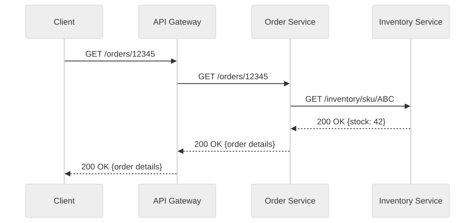
Real-World Example:
Stripe's API is widely regarded as the gold standard for REST API design. It uses Level 2 maturity with consistent resource naming (/v1/charges, /v1/customers), proper HTTP verbs, idempotency keys for safe retries, and cursor-based pagination.
Implementation Details:
// Resource Design Principles
// 1. Nouns, not verbs: /orders not /getOrders
// 2. Plural resources: /orders not /order
// 3. Nested resources for relationships: /orders/123/items
// 4. Query parameters for filtering: /orders?status=pending&limit=20
// Idempotency for safe retries
POST /orders
Headers:
Idempotency-Key: unique-client-generated-uuid
Content-Type: application/json
Body:
{ "items": [...], "customer_id": "cust_123" }
// Versioning strategies
// URI versioning: /v1/orders (most common)
// Header versioning: Accept: application/vnd.myapi.v1+json
// Query param: /orders?version=1
// Pagination
// Cursor-based (preferred for large datasets):
GET /orders?cursor=eyJpZCI6MTIzfQ&limit=20
// Offset-based (simpler, but has consistency issues):
GET /orders?offset=40&limit=20
// Standard HTTP Status Codes
// 200 OK — successful GET/PUT/PATCH
// 201 Created — successful POST
// 204 No Content — successful DELETE
// 400 Bad Request — validation error
// 401 Unauthorized — missing/invalid auth
// 403 Forbidden — insufficient permissions
// 404 Not Found — resource doesn't exist
// 409 Conflict — state conflict (e.g., concurrent update)
// 429 Too Many Requests — rate limited
// 500 Internal Server Error — server fault
// 503 Service Unavailable — temporary overload
When to Use REST: - Public-facing APIs consumed by third-party developers (discoverability, tooling ecosystem). - CRUD-heavy domains where resources map cleanly to database entities. - Systems where caching is critical (HTTP caching headers, CDN compatibility). - When you need broad client compatibility (every language has an HTTP client).
When NOT to Use REST: - High-throughput internal service-to-service communication (HTTP/1.1 overhead adds up). - Streaming or bi-directional communication (REST is request-response only). - Operations that don't map to CRUD semantics (e.g., "transfer $100 from A to B"). - When payload size matters — JSON is verbose compared to binary formats.
Trade-offs:
| Advantage | Disadvantage |
|---|---|
| Universal tooling and knowledge | Verbose payloads (JSON) |
| HTTP caching support | No built-in streaming |
| Self-documenting with OpenAPI/Swagger | Over-fetching / under-fetching |
| Stateless — easy horizontal scaling | No compile-time type safety across services |
| Browser-compatible | Multiple round-trips for complex queries |
Common Mistakes:
1. Using POST for everything (Level 0 maturity) — loses caching, idempotency, and semantic clarity.
2. Returning 200 OK for errors with error details in the body — breaks standard HTTP client behavior.
3. Not implementing pagination — returning 50,000 results in a single response.
4. Exposing database IDs directly — leaks implementation details and creates security risks.
5. Ignoring HATEOAS completely — at minimum, include self links and pagination cursors.
6. No idempotency keys on POST/PATCH — makes retries dangerous.
7. Versioning by adding fields to existing endpoints without bumping version — breaks backward compatibility.
Interview Insights: - Interviewers expect you to default to REST for external APIs and articulate why. - Be ready to explain idempotency: "If a POST /orders request times out, how does the client safely retry?" Answer: idempotency keys. - Know the trade-off between URI versioning and header versioning — URI is simpler, header is more "RESTful." - If asked about REST vs gRPC, don't just say "gRPC is faster" — explain binary serialization, HTTP/2 multiplexing, and generated client stubs.
1.1.2 gRPC (Google Remote Procedure Call)
Definition: gRPC is a high-performance, open-source RPC framework that uses Protocol Buffers (protobuf) for serialization and HTTP/2 for transport. It provides strongly-typed service contracts, bidirectional streaming, and automatic client/server code generation across multiple languages.
Architecture Diagram:

gRPC Communication Patterns:
| Pattern | Use Case | Example |
|---|---|---|
| Unary | Standard request-response | Get order details |
| Server streaming | Server sends multiple responses | Real-time price updates |
| Client streaming | Client sends multiple requests | Uploading log entries |
| Bidirectional streaming | Both sides send streams | Chat, live dashboards |
Protobuf Definition Example:
// order_service.proto
syntax = "proto3";
package commerce;
service OrderService {
// Unary
rpc GetOrder(GetOrderRequest) returns (OrderResponse);
// Server streaming
rpc WatchOrderStatus(WatchOrderRequest) returns (stream OrderStatusUpdate);
// Client streaming
rpc BatchCreateOrders(stream CreateOrderRequest) returns (BatchCreateResponse);
// Bidirectional streaming
rpc OrderChat(stream ChatMessage) returns (stream ChatMessage);
}
message GetOrderRequest {
string order_id = 1;
}
message OrderResponse {
string order_id = 1;
string status = 2;
repeated OrderItem items = 3;
int64 total_cents = 4;
google.protobuf.Timestamp created_at = 5;
}
message OrderItem {
string sku = 1;
int32 quantity = 2;
int64 unit_price_cents = 3;
}
Interceptors (Middleware):
gRPC interceptors are the equivalent of HTTP middleware. They wrap every RPC call for cross-cutting concerns:
// Common interceptor chain
Client Request
→ Logging Interceptor (log request metadata)
→ Auth Interceptor (attach JWT/API key)
→ Retry Interceptor (retry on transient errors)
→ Timeout Interceptor (enforce deadline)
→ Metrics Interceptor (record latency, status)
→ Network → Server
Server receives request
→ Auth Interceptor (validate token)
→ Rate Limit Interceptor (check quota)
→ Logging Interceptor (log request)
→ Tracing Interceptor (propagate trace ID)
→ Business Logic Handler
Real-World Example: Google uses gRPC internally for all service-to-service communication across its infrastructure. Netflix migrated from REST to gRPC for critical internal APIs, achieving a 60% reduction in payload size and significant latency improvements.
When to Use gRPC: - Internal service-to-service communication where latency matters. - Polyglot environments (auto-generated stubs for Go, Java, Python, C++, etc.). - Streaming use cases (real-time feeds, event streams, bidirectional communication). - When type safety across service boundaries is important. - High-throughput scenarios (binary serialization + HTTP/2 multiplexing).
When NOT to Use gRPC: - Public-facing APIs consumed by browsers (limited browser support without grpc-web proxy). - Teams unfamiliar with protobuf (learning curve for schema management). - Simple CRUD APIs where REST tooling is sufficient. - When human-readable payloads are important for debugging.
Trade-offs:
| Advantage | Disadvantage |
|---|---|
| 5-10x smaller payloads than JSON | Not human-readable (binary format) |
| Strong type safety via protobuf | Requires proto file management |
| HTTP/2 multiplexing (no head-of-line blocking) | Limited browser support |
| Built-in streaming support | Steeper learning curve |
| Auto-generated client libraries | Harder to debug with curl/Postman |
| Deadline propagation built-in | Proto schema evolution requires care |
Common Mistakes: 1. Not using deadlines — gRPC calls without deadlines can hang forever, leaking resources. 2. Ignoring proto schema evolution rules — removing fields or changing field numbers breaks backward compatibility. 3. Sending large payloads — gRPC has a default 4MB message limit; use streaming for large data. 4. Not implementing health checks — gRPC has a standard health checking protocol; use it. 5. Skipping interceptors for observability — without logging/tracing/metrics interceptors, debugging is nearly impossible.
Interview Insights: - If the system design involves internal microservice communication, suggest gRPC and explain why: type safety, performance, streaming. - Know the four communication patterns (unary, server streaming, client streaming, bidirectional) and when each applies. - Be ready to discuss proto schema evolution: "What happens when you add a field? Remove one? Change a type?" - Mention deadline propagation: "If Service A has a 5s deadline and calls Service B, Service B inherits the remaining deadline."
1.1.3 GraphQL
Definition: GraphQL is a query language for APIs that allows clients to request exactly the data they need. Instead of multiple REST endpoints returning fixed data shapes, a single GraphQL endpoint accepts queries that specify the exact fields, nested relationships, and aggregations required.
Architecture Diagram:

The N+1 Problem:
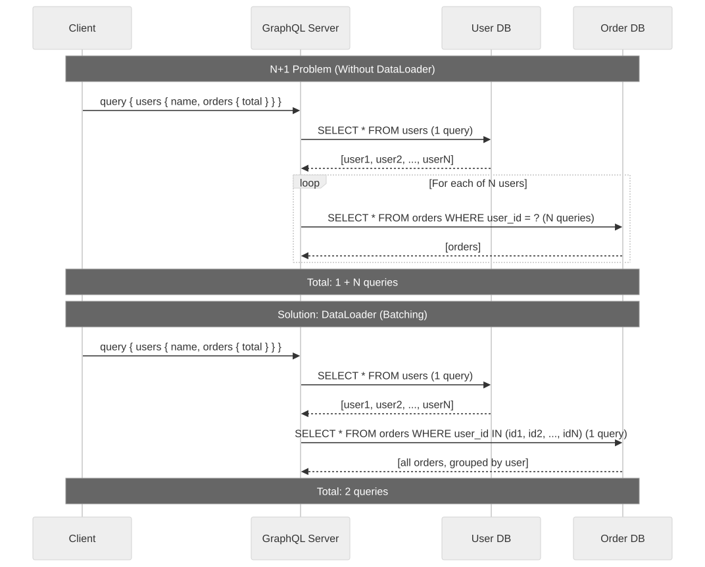
Schema Design:
# GraphQL Schema Definition Language (SDL)
type Query {
user(id: ID!): User
orders(userId: ID!, status: OrderStatus, first: Int, after: String): OrderConnection!
product(id: ID!): Product
search(query: String!, filters: SearchFilters): SearchResults!
}
type Mutation {
createOrder(input: CreateOrderInput!): CreateOrderPayload!
updateOrderStatus(orderId: ID!, status: OrderStatus!): Order!
cancelOrder(orderId: ID!, reason: String): CancelOrderPayload!
}
type Subscription {
orderStatusChanged(orderId: ID!): OrderStatusEvent!
inventoryUpdated(skuId: ID!): InventoryEvent!
}
type User {
id: ID!
email: String!
name: String!
orders(first: Int, after: String): OrderConnection!
addresses: [Address!]!
createdAt: DateTime!
}
type Order {
id: ID!
status: OrderStatus!
items: [OrderItem!]!
totalCents: Int!
user: User!
shippingAddress: Address!
createdAt: DateTime!
updatedAt: DateTime!
}
type OrderItem {
id: ID!
product: Product!
quantity: Int!
unitPriceCents: Int!
}
# Relay-style pagination
type OrderConnection {
edges: [OrderEdge!]!
pageInfo: PageInfo!
totalCount: Int!
}
type OrderEdge {
node: Order!
cursor: String!
}
type PageInfo {
hasNextPage: Boolean!
hasPreviousPage: Boolean!
startCursor: String
endCursor: String
}
enum OrderStatus {
PENDING
CONFIRMED
SHIPPED
DELIVERED
CANCELLED
}
Resolver Implementation Pattern:
// Resolver map (pseudocode)
resolvers = {
Query: {
user: (parent, { id }, context) => userService.getById(id),
orders: (parent, { userId, status, first, after }, context) =>
orderService.list({ userId, status, first, after }),
},
User: {
// Field-level resolver — only called if client requests 'orders'
orders: (user, { first, after }, context) =>
// Uses DataLoader to batch across multiple user resolutions
context.loaders.ordersByUser.load(user.id),
},
Order: {
// Resolves the user field on an order — also batched
user: (order, args, context) =>
context.loaders.userById.load(order.userId),
items: (order, args, context) =>
context.loaders.orderItems.load(order.id),
},
OrderItem: {
product: (item, args, context) =>
context.loaders.productById.load(item.productId),
},
Mutation: {
createOrder: (parent, { input }, context) => {
authorize(context.user, 'CREATE_ORDER');
return orderService.create(input);
},
},
}
Real-World Example: GitHub's API v4 is entirely GraphQL, allowing clients to fetch exactly the repository, issue, pull request, and review data they need in a single request — replacing dozens of REST round-trips. Shopify uses GraphQL for its Storefront API, enabling merchants to build custom storefronts that fetch only the product data their templates require.
When to Use GraphQL: - Client-driven data requirements (mobile apps with limited bandwidth). - Multiple client types (web, mobile, TV) needing different data shapes from the same backend. - Aggregation layer over multiple microservices. - Rapid frontend development (frontend teams can query what they need without backend changes).
When NOT to Use GraphQL: - Simple APIs with fixed, predictable query patterns. - File upload heavy applications (GraphQL handles files awkwardly). - When query complexity control is difficult (malicious nested queries can DDoS your database). - Caching-heavy scenarios (REST + HTTP caching is simpler and more effective). - Internal service-to-service communication (gRPC is better here).
Trade-offs:
| Advantage | Disadvantage |
|---|---|
| No over-fetching or under-fetching | Query complexity attacks |
| Single endpoint simplifies routing | Caching is harder (no HTTP caching) |
| Strong typing via schema | N+1 problem without DataLoader |
| Self-documenting (introspection) | Error handling is non-standard |
| Real-time via subscriptions | Steeper backend learning curve |
| Frontend autonomy | File uploads require workarounds |
Common Mistakes: 1. Not implementing DataLoader — the N+1 problem will destroy your database at scale. 2. No query depth/complexity limits — a deeply nested query can generate thousands of database queries. 3. Exposing the entire schema without authorization — every field resolver must check permissions. 4. Not using persisted queries in production — allows arbitrary queries from untrusted clients. 5. Over-engineering the schema — GraphQL doesn't mean you need one unified graph for everything.
Interview Insights: - GraphQL is typically proposed as a BFF (Backend-for-Frontend) layer, not for service-to-service communication. - Know the N+1 problem cold: describe it, explain DataLoader batching, and estimate the query count with and without it. - Be ready to discuss query complexity: "How do you prevent a client from sending a query that joins 10 levels deep?" - Mention that GraphQL subscriptions use WebSockets under the hood for real-time features.
Synchronous Communication Comparison Table
| Dimension | REST | gRPC | GraphQL |
|---|---|---|---|
| Protocol | HTTP/1.1 or HTTP/2 | HTTP/2 | HTTP (typically POST) |
| Serialization | JSON (text) | Protobuf (binary) | JSON (text) |
| Type Safety | OpenAPI (optional) | Protobuf (enforced) | Schema (enforced) |
| Streaming | Not native | Built-in (4 patterns) | Subscriptions (WebSocket) |
| Browser Support | Full | Limited (needs grpc-web) | Full |
| Caching | HTTP caching, CDN-friendly | Custom caching needed | Complex (no HTTP caching) |
| Code Generation | Optional (OpenAPI codegen) | Built-in (protoc) | Optional (codegen tools) |
| Payload Size | Large (JSON + headers) | Small (binary) | Variable (client-specified) |
| Learning Curve | Low | Medium | Medium-High |
| Best For | Public APIs, CRUD | Internal services, streaming | Client-facing aggregation |
1.2 Asynchronous Communication
Asynchronous communication decouples the sender from the receiver. The sender publishes a message and continues without waiting for a response. This eliminates temporal coupling, enables better fault tolerance, and allows independent scaling of producers and consumers — at the cost of increased complexity, eventual consistency, and harder debugging.
1.2.1 Apache Kafka
Definition: Apache Kafka is a distributed, partitioned, replicated commit log designed for high-throughput, fault-tolerant messaging. Unlike traditional message queues, Kafka retains messages for a configurable duration (days or weeks), allowing consumers to replay events. Kafka's design makes it ideal for event streaming, change data capture, and building event-driven architectures.
Architecture Diagram:

Core Concepts:
| Concept | Description |
|---|---|
| Topic | A named category/feed of messages. Analogous to a table in a database. |
| Partition | A topic is split into partitions for parallelism. Each partition is an ordered, immutable sequence of messages. |
| Offset | A unique sequential ID for each message within a partition. Consumers track their position via offsets. |
| Producer | Publishes messages to topics. Chooses partition via key hashing or round-robin. |
| Consumer Group | A set of consumers that cooperatively consume a topic. Each partition is assigned to exactly one consumer in the group. |
| Replication Factor | Number of copies of each partition across brokers. RF=3 means data survives 2 broker failures. |
| ISR (In-Sync Replicas) | The set of replicas that are fully caught up with the leader. Only ISR members can be elected leader. |
Partitioning and Ordering:
// Message key determines partition assignment
// Same key → same partition → guaranteed ordering
Producer sends:
{ key: "order-123", value: "CREATED" } → Partition 2
{ key: "order-123", value: "PAID" } → Partition 2 (same key = same partition)
{ key: "order-123", value: "SHIPPED" } → Partition 2 (ordering guaranteed)
{ key: "order-456", value: "CREATED" } → Partition 0 (different key, different partition)
{ key: "order-456", value: "PAID" } → Partition 0 (ordering guaranteed within partition)
// CRITICAL: Ordering is guaranteed ONLY within a single partition
// Cross-partition ordering is NOT guaranteed
Consumer Group Rebalancing:
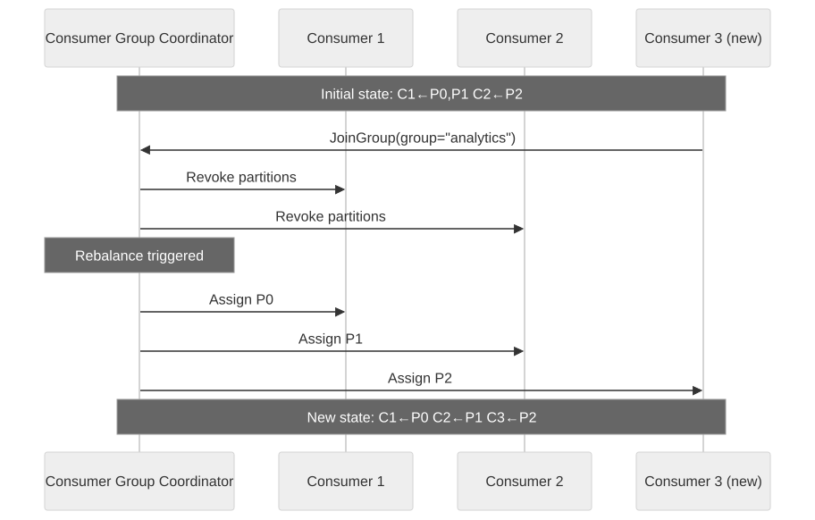
Delivery Guarantees:
| Guarantee | Configuration | Trade-off |
|---|---|---|
| At-most-once | acks=0 on producer, auto-commit offsets |
Fast, but messages can be lost |
| At-least-once | acks=all on producer, manual offset commit after processing |
Safe, but consumers must be idempotent |
| Exactly-once | enable.idempotence=true + transactional API |
Safest, but adds latency and complexity |
Real-World Example: LinkedIn (Kafka's creator) processes over 7 trillion messages per day through Kafka. Uber uses Kafka as the backbone of its event-driven architecture, with thousands of topics handling ride events, driver location updates, pricing calculations, and financial transactions.
When to Use Kafka: - High-throughput event streaming (100K+ messages/sec per partition). - Event sourcing and event-driven architectures. - Change data capture (CDC) from databases. - Log aggregation and pipeline processing. - When message replay capability is needed (consumers can rewind offsets). - Decoupling services in a microservices architecture.
When NOT to Use Kafka: - Simple task queues with limited throughput (RabbitMQ or SQS are simpler). - When you need complex routing logic (exchanges, routing keys) — RabbitMQ is better. - Extremely low-latency requirements (sub-millisecond) — Kafka adds 2-10ms at minimum. - Small teams with limited operational expertise — Kafka is operationally complex.
Common Mistakes: 1. Too few partitions — limits consumer parallelism (you can never reduce partitions, only add). 2. Too many partitions — increases metadata overhead, rebalance time, and end-to-end latency. 3. Not setting message keys — round-robin assignment breaks ordering guarantees. 4. Auto-committing offsets — if processing fails after commit, messages are lost. 5. Consumer group with more consumers than partitions — excess consumers sit idle. 6. Not monitoring consumer lag — falling behind silently until data retention expires. 7. Large messages (>1MB) — Kafka is optimized for small messages; use claim-check pattern for large payloads.
Interview Insights: - When discussing event-driven systems, Kafka should be your default choice. Explain partitioning, consumer groups, and replication. - Know the ordering guarantee: "Kafka guarantees ordering within a partition, not across partitions. Use the entity ID as the message key to ensure all events for one entity land in the same partition." - Be ready to discuss consumer lag: "How do you detect that a consumer is falling behind?" Answer: monitor the offset gap between producer and consumer; alert when lag exceeds a threshold. - Explain the exactly-once semantics trade-off: "Exactly-once requires idempotent producers and transactional consumers, which adds latency. Most systems use at-least-once with idempotent consumers instead."
1.2.2 RabbitMQ
Definition: RabbitMQ is a traditional message broker implementing the Advanced Message Queuing Protocol (AMQP). Unlike Kafka's log-based model, RabbitMQ uses exchanges, queues, and bindings to route messages. It excels at complex routing patterns, priority queues, and traditional work queue scenarios.
Architecture Diagram:

Exchange Types:
| Exchange Type | Routing Behavior | Use Case |
|---|---|---|
| Direct | Exact match on routing key | Task routing to specific queues |
| Topic | Pattern match with wildcards (* = one word, # = zero or more) |
Event routing by category (e.g., order.*.us) |
| Fanout | Broadcast to all bound queues | Notifications, cache invalidation |
| Headers | Match on message headers (not routing key) | Complex routing based on message metadata |
Message Acknowledgment:
// Consumer acknowledgment patterns
// 1. Auto-ack (fire and forget — dangerous)
channel.consume(queue, (msg) => {
process(msg); // If this fails, message is lost
}, { noAck: true });
// 2. Manual ack (safe — message redelivered on failure)
channel.consume(queue, (msg) => {
try {
process(msg);
channel.ack(msg); // Success: remove from queue
} catch (err) {
channel.nack(msg, false, true); // Failure: requeue
}
});
// 3. Dead letter exchange (DLX) — handle poison messages
// After N redelivery attempts, route to DLQ for investigation
// Configure via queue arguments:
// x-dead-letter-exchange: "dlx"
// x-dead-letter-routing-key: "failed.orders"
// x-message-ttl: 60000 (expire after 60s)
Real-World Example: Instagram uses RabbitMQ for its notification pipeline, routing different notification types (likes, comments, follows, DMs) to specialized handler queues. The topic exchange enables flexible routing as new notification types are added without modifying existing consumers.
When to Use RabbitMQ: - Complex routing requirements (topic-based, header-based routing). - Traditional work queues with competing consumers. - When message acknowledgment and redelivery guarantees are critical. - Priority queues (RabbitMQ supports message priority natively). - Moderate throughput scenarios (10K-50K messages/sec). - When you need dead letter queues and message TTL out of the box.
When NOT to Use RabbitMQ: - High-throughput event streaming (Kafka handles 10x-100x more throughput). - When message replay/rewind is needed (RabbitMQ deletes messages after consumption). - Event sourcing architectures (Kafka's log retention is essential). - When you need infinite message retention.
Trade-offs:
| Advantage | Disadvantage |
|---|---|
| Rich routing capabilities | Lower throughput than Kafka |
| Built-in DLQ, TTL, priority | No message replay |
| Multiple protocols (AMQP, MQTT, STOMP) | Messages deleted after consumption |
| Easier to operate than Kafka | Cluster management can be fragile |
| Mature ecosystem and tooling | Memory-based queues can OOM under load |
Common Mistakes: 1. Not using manual acknowledgments — auto-ack loses messages when consumers crash. 2. No dead letter queue — poison messages block the queue forever. 3. Unbounded queues — queue growth without flow control leads to memory exhaustion. 4. Single node deployment — no fault tolerance; use mirrored/quorum queues. 5. Not setting prefetch count — one consumer grabs all messages, starving others.
1.2.3 Amazon SQS
Definition: Amazon Simple Queue Service (SQS) is a fully managed message queuing service that offers two queue types: Standard (best-effort ordering, at-least-once delivery) and FIFO (exactly-once processing, strict ordering). SQS eliminates the operational burden of running a message broker.
Architecture Diagram:

Standard vs FIFO Queues:
| Feature | Standard Queue | FIFO Queue |
|---|---|---|
| Throughput | Nearly unlimited | 300 msg/sec (3,000 with batching) |
| Ordering | Best-effort | Strict within MessageGroupId |
| Delivery | At-least-once (may duplicate) | Exactly-once |
| Deduplication | Not supported | Content-based or MessageDeduplicationId |
| Use Case | High-throughput background jobs | Financial transactions, order processing |
Visibility Timeout Pattern:
// SQS visibility timeout prevents duplicate processing
1. Consumer A calls ReceiveMessage → gets Message X
Message X becomes "invisible" for visibilityTimeout (default: 30s)
2. Consumer A processes Message X successfully
Consumer A calls DeleteMessage(receiptHandle)
Message X is permanently removed
3. If Consumer A crashes before DeleteMessage:
After visibilityTimeout expires, Message X becomes visible again
Consumer B (or A) picks it up and retries
// CRITICAL: Set visibilityTimeout > max processing time
// If processing takes 60s but timeout is 30s, another consumer
// will pick up the message while the first is still processing it
When to Use SQS: - You want zero operational overhead (fully managed, no brokers to maintain). - Simple producer-consumer patterns without complex routing. - AWS-native architectures (integrates with Lambda, SNS, EventBridge). - When you need the exact-once delivery of FIFO queues.
When NOT to Use SQS: - Complex routing patterns (no exchange/topic equivalent — use SNS + SQS). - Message replay capability needed (messages deleted after consumption). - Cross-cloud or on-premise deployments (AWS lock-in). - High-throughput streaming (FIFO limit of 3,000 msg/sec is low for some use cases).
Asynchronous Communication Comparison Table
| Dimension | Kafka | RabbitMQ | Amazon SQS |
|---|---|---|---|
| Model | Distributed log | Message broker | Managed queue |
| Throughput | Millions/sec | 10K-50K/sec | Unlimited (Standard) / 3K (FIFO) |
| Ordering | Per-partition | Per-queue | Best-effort (Standard) / Per-group (FIFO) |
| Replay | Yes (configurable retention) | No | No |
| Routing | Topic-based only | Exchanges (direct, topic, fanout, headers) | None (use SNS for fan-out) |
| Delivery | At-least-once / Exactly-once | At-least-once / At-most-once | At-least-once (Standard) / Exactly-once (FIFO) |
| Operations | Complex (brokers, ZK/KRaft) | Moderate (cluster mgmt) | Zero (fully managed) |
| Retention | Days/weeks (configurable) | Until consumed | 14 days max |
| Best For | Event streaming, CDC, event sourcing | Work queues, complex routing | Simple queues on AWS |
1.3 Publish-Subscribe (Pub/Sub)
Definition: Pub/Sub is a messaging paradigm where publishers emit events without knowledge of subscribers. A message broker or event bus mediates delivery. Subscribers express interest in event types and receive matching events asynchronously. This pattern maximally decouples producers from consumers.
Architecture Diagram:

Fan-Out Pattern
Fan-out delivers a single message to multiple subscribers simultaneously. Every subscriber gets every message published to the topic.
// Fan-out example: Order Created event
OrderService publishes: { event: "order.created", orderId: "123", userId: "u789" }
Subscribers (all receive the same event):
→ Notification Service: sends order confirmation email
→ Analytics Service: records conversion event
→ Fulfillment Service: initiates picking/packing
→ Fraud Service: runs post-order fraud check
→ Loyalty Service: accrues reward points
// Each subscriber processes independently
// Failure of one subscriber does NOT affect others
Topic-Based Filtering
Subscribers filter messages by topic name or topic hierarchy. This is the most common pub/sub pattern.
// Topic hierarchy example
events/
orders/
created → Fulfillment, Analytics, Notifications
cancelled → Refund, Analytics, Notifications
shipped → Tracking, Analytics, Notifications
payments/
authorized → Order Service
captured → Settlement, Analytics
refunded → Order Service, Notifications
inventory/
low-stock → Procurement, Alerts
restocked → Catalog Service
Content-Based Filtering
Subscribers filter based on message content/attributes rather than topic name. This provides finer-grained routing without topic explosion.
// Content-based filtering (e.g., AWS SNS filter policies)
Topic: "orders"
Subscriber: High-Value-Order-Handler
Filter: { "order_total": [{ "numeric": [">=", 100000] }] }
// Only receives orders >= $1,000
Subscriber: International-Order-Handler
Filter: { "shipping_country": [{ "anything-but": "US" }] }
// Receives all non-US orders
Subscriber: Priority-Customer-Handler
Filter: { "customer_tier": ["platinum", "gold"] }
// Only receives orders from premium customers
When to Use Pub/Sub: - One event triggers multiple independent downstream actions (fan-out). - You need to add new subscribers without modifying the publisher. - Event-driven architectures where services react to state changes. - Cross-team boundaries where teams own their own consumers.
When NOT to Use Pub/Sub: - Request-response patterns where the caller needs a result. - Ordered, sequential processing of a workflow (use a queue or orchestrator instead). - When delivery guarantees must be exactly-once (most pub/sub is at-least-once).
Trade-offs:
| Advantage | Disadvantage |
|---|---|
| Maximum decoupling | Harder to debug event flows |
| Easy to add new subscribers | Message ordering not guaranteed across subscribers |
| Independent scaling per subscriber | Eventual consistency |
| Fault isolation between subscribers | Duplicate delivery requires idempotent consumers |
1.4 Event Sourcing (as a Communication Paradigm)
Definition: Event sourcing stores every state change as an immutable event in an append-only event store, rather than storing only the current state. The current state is derived by replaying events. Events serve as the system of record and the communication mechanism simultaneously.
Architecture Diagram:

Event Store Structure:
// Event Store for Order aggregate
// Each row is an immutable event
| stream_id | version | event_type | data | timestamp |
|-------------|---------|------------------|-----------------------------------------------|---------------------|
| order-123 | 1 | OrderCreated | { userId: "u1", items: [...], total: 5999 } | 2025-01-15T10:00:00 |
| order-123 | 2 | PaymentAuthorized| { paymentId: "pay_1", amount: 5999 } | 2025-01-15T10:00:05 |
| order-123 | 3 | OrderConfirmed | { confirmedBy: "system" } | 2025-01-15T10:00:06 |
| order-123 | 4 | ItemShipped | { trackingId: "TRK001", carrier: "FedEx" } | 2025-01-16T14:30:00 |
| order-123 | 5 | OrderDelivered | { deliveredAt: "2025-01-18T09:15:00" } | 2025-01-18T09:15:00 |
// Rebuilding current state:
// Replay events 1-5 → Order { status: DELIVERED, total: 5999, ... }
Snapshots for Performance:
// Problem: Replaying 10,000 events to rebuild state is slow
// Solution: Periodic snapshots
| stream_id | snapshot_version | state | timestamp |
|-----------|-----------------|------------------------------------------|---------------------|
| order-123 | 3 | { status: CONFIRMED, total: 5999, ... } | 2025-01-15T10:00:06 |
// Rebuild: Load snapshot (version 3), then replay events 4-5
// Instead of replaying all 5 events, we replay only 2
// Take snapshots every N events (e.g., every 100)
Event Replay for Projection Rebuilds:
// Scenario: New "Seller Revenue" read model needs historical data
// Solution: Replay all events from the beginning
1. Deploy new projection with offset = 0
2. Projection reads events sequentially from event store
3. For each event, update the read model
4. Once caught up to real-time, switch to live processing
// This is why event sourcing enables retroactive features:
// You have the complete history, not just current state
When to Use Event Sourcing: - Audit-complete domains (finance, healthcare, legal) where the full history of changes matters. - Systems where you need to rebuild state at any point in time. - Complex domain logic where the sequence of state transitions is important. - When retroactive projections/reports are needed.
When NOT to Use Event Sourcing: - Simple CRUD applications where current state is all you need. - Systems where event schema evolution is a major concern. - Small teams without experience in event-driven architectures. - When storage cost of retaining all events is prohibitive.
Common Mistakes: 1. Treating events as commands — events are facts that happened; commands are requests that may be rejected. 2. Not versioning events — when event schema changes, old events must still be deserializable. 3. No snapshots — performance degrades as event count grows per aggregate. 4. Coupling projection logic to event structure — projections should handle unknown event types gracefully. 5. Storing derived data in events — events should contain only the minimal data that changed, not computed values.
Interview Insights: - Event sourcing is often combined with CQRS in system design interviews. Be ready to explain both together. - Key selling point: "With event sourcing, we can answer questions we haven't thought of yet by replaying the event log." - Know the snapshot optimization: "For hot aggregates with thousands of events, we take periodic snapshots to avoid replaying the full history."
Section 1 — Architecture Decision Record
ADR-001: Communication Pattern Selection
| Decision Point | Choice | Rationale |
|---|---|---|
| External client → API | REST (Level 2) | Universal tooling, cacheability, developer experience |
| Internal service → service (latency-sensitive) | gRPC | Binary serialization, type safety, HTTP/2 multiplexing |
| Client → aggregation layer | GraphQL | Flexible queries, no over-fetching for multiple clients |
| Service → service (decoupled) | Kafka | High throughput, message replay, event sourcing support |
| Task queue (work distribution) | RabbitMQ or SQS | Complex routing (RabbitMQ) or zero-ops (SQS) |
| One-to-many notifications | Pub/Sub (SNS/Kafka) | Fan-out delivery, subscriber independence |
| Audit-complete state management | Event Sourcing | Full history, replayability, retroactive projections |
Section 2: Data Patterns
Data management in a microservices architecture is fundamentally different from a monolith. In a monolith, a single database provides ACID transactions, JOIN operations, and referential integrity across all domain entities. When you decompose into microservices, you lose all of these guarantees and must replace them with distributed patterns that are more complex, more fragile, and require more engineering effort — but are essential for independent deployment, scaling, and fault isolation.
2.1 Database Per Service
Definition: Each microservice owns its database (or schema), and no other service may access it directly. All inter-service data access happens through the service's API. This is the foundational data pattern of microservices architecture.
Architecture Diagram:

Schema Ownership Model:
// Each service owns its schema completely
// Order Service owns:
// - orders table
// - order_items table
// - order_status_history table
// Stores: user_id (reference, NOT foreign key to User DB)
// User Service owns:
// - users table
// - user_addresses table
// - user_preferences table
// FORBIDDEN: Order Service reading directly from users table
// CORRECT: Order Service calls User Service API to get user data
Handling Cross-Service Joins:
// Problem: "Show order with customer name and product details"
// In a monolith: SELECT o.*, u.name, p.title FROM orders o
// JOIN users u ON o.user_id = u.id
// JOIN products p ON oi.product_id = p.id
// In microservices: No cross-service JOINs possible
// Solution 1: API Composition (synchronous)
orderDetails = orderService.getOrder(orderId)
user = userService.getUser(orderDetails.userId)
products = productService.getProducts(orderDetails.productIds)
return merge(orderDetails, user, products)
// Solution 2: Data Denormalization (eventual consistency)
// Order Service stores a snapshot of user name and product title
// at order creation time. Stale but fast.
orders table:
order_id | user_id | user_name_snapshot | items_json | ...
// Solution 3: CQRS Read Model (materialized view)
// A dedicated read model joins data from multiple event streams
// Updated asynchronously via events from each service
order_details_view:
order_id | user_name | product_titles | total | status | ...
When to Use Database Per Service: - You need independent deployment and scaling of services. - Services have different data storage requirements (SQL for orders, document store for product catalog, time-series for analytics). - Teams own their services end-to-end and need schema autonomy. - You need fault isolation — one service's database issues should not affect others.
When NOT to Use Database Per Service: - Small teams (< 5 engineers) where operational overhead of multiple databases is unjustified. - Tightly coupled domains where most operations require data from multiple entities. - Early-stage products where domain boundaries are still unclear. - When strong consistency across entities is a hard requirement.
Trade-offs:
| Advantage | Disadvantage |
|---|---|
| Independent deployment | No cross-service JOINs |
| Technology heterogeneity | Distributed transactions are complex |
| Fault isolation | Data duplication and eventual consistency |
| Independent scaling | Reporting across services requires data aggregation |
| Schema autonomy | More databases to operate and monitor |
Common Mistakes: 1. Sharing a database but calling it "database per service" — if two services read/write the same tables, it's a shared database. 2. Not denormalizing enough — making synchronous API calls for every read operation creates latency and coupling. 3. Ignoring referential integrity — foreign key references across services are logical only; there's no enforcement. 4. Not planning for cross-service queries from the start — reporting needs often drive you back to a shared database.
2.2 Shared Database Anti-Pattern
Definition: Multiple microservices share a single database, often reading and writing the same tables. This pattern is called an "anti-pattern" because it negates the core benefits of microservices: independent deployment, fault isolation, and schema autonomy.
Architecture Diagram:

Why It Fails:
| Problem | Explanation |
|---|---|
| Tight coupling | Schema change in one service's tables can break other services. |
| No independent deployment | Database migration must coordinate across all services. |
| No fault isolation | One service running expensive queries degrades performance for all. |
| No technology heterogeneity | All services are locked into the same database technology. |
| Scaling limitations | Cannot scale one service's data independently. |
| Ownership ambiguity | Who owns the "users" table? Multiple services write to it. |
When It Is Acceptable: Despite being an anti-pattern, a shared database is sometimes the right pragmatic choice:
- Monolith-to-microservices migration: As a transitional step, services share the database while being extracted. The shared DB is temporary.
- Read-only sharing: Service A owns the table, Service B has read-only access. Less coupling than read-write sharing.
- Small team with a single product: If you have 3 engineers and a single product, the operational overhead of multiple databases is not justified.
- Reporting/analytics: A shared read replica for BI tools is acceptable if it doesn't affect the write path.
Migration Strategy from Shared DB:
Interview Insights: - If you propose a shared database in an interview, acknowledge it as a trade-off and explain your reasoning (e.g., "For an early-stage system with 3 engineers, the operational overhead of separate databases outweighs the benefits"). - Know the migration path: "We start with a shared database and progressively extract service-specific databases as domain boundaries solidify."
2.3 Saga Pattern
Definition: A saga is a sequence of local transactions across multiple services. Each local transaction updates the service's database and publishes an event (or triggers the next step). If any step fails, compensating transactions undo the preceding changes. Sagas replace distributed ACID transactions (2PC) with eventual consistency and explicit compensation logic.
Two Saga Coordination Strategies:
2.3.1 Choreography-Based Saga
Each service listens for events and decides locally whether to act. There is no central coordinator. Services communicate through events.
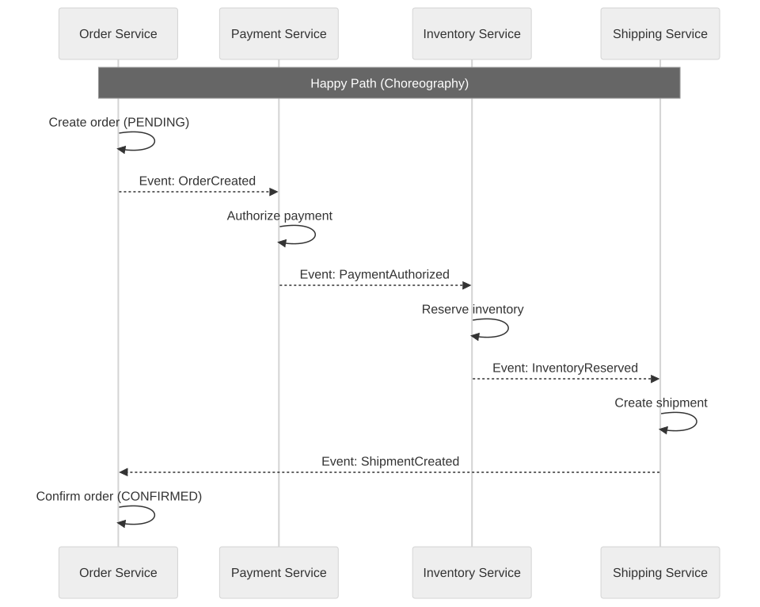
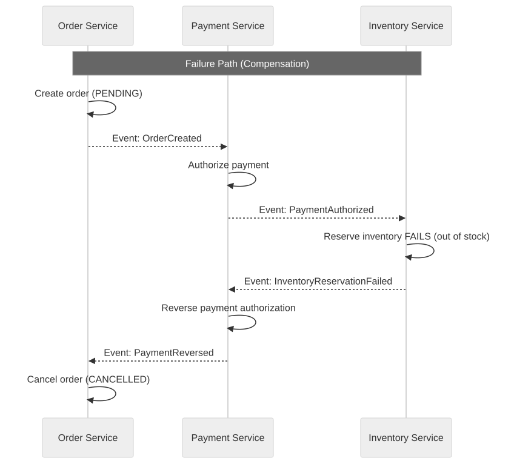
2.3.2 Orchestration-Based Saga
A central saga orchestrator coordinates the entire sequence. It sends commands to services and handles responses. The orchestrator contains all the workflow logic.
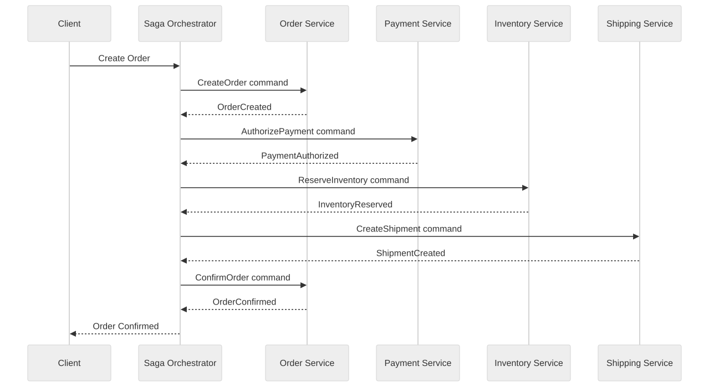
Saga State Machine (Orchestrator):

Compensating Transactions:
// Each saga step has a forward action and a compensating action
| Step | Forward Action | Compensating Action |
|------|---------------|-------------------|
| 1. Create Order | Insert order (PENDING) | Cancel order (CANCELLED) |
| 2. Authorize Payment | Charge credit card | Reverse authorization |
| 3. Reserve Inventory | Decrement stock count | Release reserved stock |
| 4. Create Shipment | Schedule pickup | Cancel shipment |
// Compensating transactions are NOT rollbacks
// They are new transactions that semantically undo the effect
// Example: Payment compensation is a refund, not a database rollback
Choreography vs Orchestration Comparison:
| Dimension | Choreography | Orchestration |
|---|---|---|
| Coupling | Loose (event-driven) | Tighter (orchestrator knows all steps) |
| Complexity | Distributed across services | Centralized in orchestrator |
| Visibility | Hard to see full workflow | Easy to trace entire saga |
| Adding steps | New service subscribes to events | Modify orchestrator |
| Testing | Integration tests across services | Unit test the orchestrator |
| Failure handling | Each service handles its own compensation | Orchestrator manages all compensation |
| Best for | Simple sagas (2-3 steps) | Complex sagas (4+ steps) |
Real-World Example: Uber uses orchestration-based sagas for ride completion: authorize payment, charge rider, pay driver, update ride status, generate receipt. If any step fails, the orchestrator triggers compensating transactions to reverse the preceding steps.
When to Use Sagas: - Business operations that span multiple microservices. - When distributed ACID transactions (2PC) are too slow or operationally complex. - Long-running business processes (minutes, hours, or days). - When compensating transactions are semantically meaningful (refund, release, cancel).
When NOT to Use Sagas: - Operations within a single service (use local ACID transactions). - When all-or-nothing atomicity is strictly required (sagas provide eventual consistency, not atomicity). - Simple read-only aggregation across services (use API composition instead).
Common Mistakes: 1. Not designing compensating transactions from the start — retrofitting compensation is extremely difficult. 2. Non-idempotent saga steps — if a step is retried, it must produce the same result. 3. Missing the "pivot transaction" concept — after the pivot step, compensation is not possible (e.g., package delivered). 4. No saga timeout — a saga stuck in an intermediate state forever wastes resources. 5. Choreography for complex workflows — debugging event chains across 6+ services is a nightmare. 6. Not persisting saga state — if the orchestrator crashes, it must resume from where it left off.
Interview Insights: - Sagas are the go-to answer for "How do you handle distributed transactions?" in interviews. - Always mention the two strategies (choreography and orchestration) and recommend orchestration for complex workflows. - Be ready to draw the compensating transaction table for any multi-service operation. - Know the saga state machine: "The orchestrator is a state machine that tracks the saga through its stages and handles both success and failure paths."
2.4 Event Sourcing (Data Pattern)
Definition: Event sourcing stores every state change as an immutable event, creating a complete audit trail of how the current state was reached. The current state is derived by replaying events (or loading a snapshot and replaying recent events). This section focuses on the data storage and management aspects of event sourcing.
Event Store Design:

Event Versioning Strategies:
// Problem: Event schema evolves over time
// Event: OrderCreated v1 has {items, total}
// Event: OrderCreated v2 adds {currency, shipping_method}
// Strategy 1: Upcasting (transform old events to new schema on read)
function upcast(event) {
if (event.type === "OrderCreated" && event.version === 1) {
return {
...event,
data: {
...event.data,
currency: "USD", // default value
shipping_method: "standard" // default value
},
version: 2
};
}
return event;
}
// Strategy 2: Weak Schema (add optional fields, never remove)
// All consumers must handle missing fields gracefully
// Strategy 3: New Event Type
// Instead of changing OrderCreated, create OrderCreatedV2
// Consumers handle both event types
// RECOMMENDED: Use upcasting for minor changes, new event types for major changes
Projection Rebuild Process:
// Scenario: Bug in projection logic caused incorrect read model
// Solution: Fix the bug, then rebuild the projection from scratch
Step 1: Stop the projection
Step 2: Drop the read model table
Step 3: Reset the projection's checkpoint to 0
Step 4: Restart the projection
Step 5: Projection replays ALL events, building correct read model
Step 6: Once caught up, projection processes live events
// This is the killer feature of event sourcing:
// Read models are disposable and rebuildable
// For large event stores, parallel replay:
// - Shard by stream_id
// - Replay each shard in parallel
// - Merge into read model
Trade-offs:
| Advantage | Disadvantage |
|---|---|
| Complete audit trail | Higher storage requirements |
| Time-travel debugging | Event schema evolution is complex |
| Rebuildable read models | Eventually consistent read models |
| Retroactive features via replay | Higher learning curve |
| Natural fit for event-driven systems | Not suitable for all domains |
2.5 CQRS (Command Query Responsibility Segregation)
Definition: CQRS separates the read model (queries) from the write model (commands). Instead of a single data model serving both reads and writes, the system maintains optimized models for each. Commands mutate state through the write model; queries read from purpose-built read models updated asynchronously.
Architecture Diagram:

Separate Read Models (Materialized Views):
// Write Model (normalized, optimized for consistency)
orders: order_id | user_id | status | created_at
order_items: item_id | order_id | product_id | quantity | unit_price
products: product_id | name | category | seller_id
users: user_id | name | email
// Read Model 1: Order Dashboard (denormalized for fast queries)
order_dashboard_view:
order_id | user_name | user_email | status |
item_count | total_amount | product_names | created_at
// Read Model 2: Seller Analytics (aggregated for reporting)
seller_daily_stats:
seller_id | date | orders_count | revenue | top_product | avg_order_value
// Read Model 3: Search Index (Elasticsearch for full-text search)
order_search_index:
order_id | user_name | product_names | status | amount | date
// Supports: full-text search, faceted filtering, sorting
// Each read model is updated asynchronously via projections
// Each can use a different storage technology
// Each is optimized for its specific query pattern
CQRS Without Event Sourcing:
// CQRS does NOT require event sourcing
// You can use CQRS with a traditional database + change data capture
Write Path:
1. Command arrives
2. Domain logic validates and processes
3. Write to PostgreSQL (traditional UPDATE/INSERT)
4. CDC (Debezium) captures the change
5. Change event published to Kafka
Read Path:
1. Kafka consumer receives change event
2. Projection updates the read model (Elasticsearch, Redis, etc.)
3. Query API reads from the read model
When to Use CQRS: - Read and write workloads have dramatically different characteristics (1000:1 read-to-write ratio). - You need multiple optimized read models for different query patterns. - The domain is complex enough that a single model cannot efficiently serve both reads and writes. - Used with event sourcing for complete state management.
When NOT to Use CQRS: - Simple CRUD applications where reads and writes are similar in shape and volume. - When eventual consistency between read and write models is not acceptable. - Small teams where the additional complexity is not justified. - When you don't have different query patterns requiring different optimizations.
Trade-offs:
| Advantage | Disadvantage |
|---|---|
| Optimized read models per query pattern | Eventual consistency (read lag) |
| Independent scaling of read and write | More infrastructure to maintain |
| Technology flexibility per read model | Increased system complexity |
| Better performance for read-heavy systems | Data duplication across models |
Common Mistakes: 1. Applying CQRS everywhere — most services don't need it; use it selectively for complex domains. 2. Ignoring eventual consistency in the UI — users expect to see their changes immediately. 3. Not handling projection failures — if a projection crashes, the read model becomes stale. 4. Over-engineering read models — start with one read model and add more only when needed. 5. Confusing CQRS with event sourcing — they are complementary but independent patterns.
Interview Insights: - CQRS is a strong answer for "How do you handle a system with 1000:1 read-to-write ratio?" - Explain the eventual consistency trade-off: "The read model may be a few seconds behind the write model. For most UIs, we handle this with optimistic updates on the client." - Know when to combine CQRS with event sourcing vs. CQRS with CDC: "Event sourcing gives us full history and replay; CDC is simpler if we only need eventual consistency."
Section 2 — Architecture Decision Record
ADR-002: Data Pattern Selection
| Decision Point | Choice | Rationale |
|---|---|---|
| Service data ownership | Database per service | Independent deployment, fault isolation, team autonomy |
| Cross-service data query | API composition + CQRS read models | Avoid direct DB access; denormalize for performance |
| Multi-service transactions | Orchestration-based saga | Visibility, testability, complex compensation logic |
| Audit-complete domains | Event sourcing | Complete history, replayability, regulatory compliance |
| High read-to-write ratio | CQRS | Separate optimized read models, independent scaling |
| Transitional migration | Shared database (temporary) | Pragmatic step during monolith decomposition |
Section 3: Resilience Patterns
In a distributed system, failure is not a possibility — it is a certainty. Networks partition. Services crash. Databases become unreachable. Downstream dependencies slow down. Disk fills up. A resilient system doesn't prevent failures; it survives them gracefully, continues serving traffic at reduced capacity, and recovers automatically.
This section covers the five foundational resilience patterns that every microservices architecture must implement.
3.1 Circuit Breaker
Definition: The circuit breaker pattern prevents a service from repeatedly calling a failing downstream dependency. Like an electrical circuit breaker, it "trips" when failures exceed a threshold, short-circuiting subsequent calls and returning an immediate error (or fallback) instead of waiting for a timeout. After a cooldown period, it allows a test request through to check if the dependency has recovered.
State Machine:

Sequence Diagram:
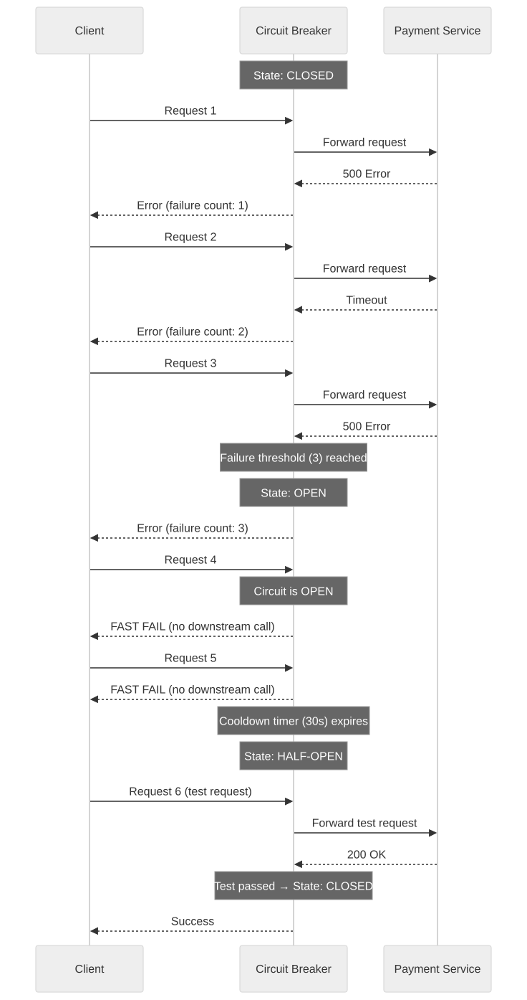
Configuration Parameters:
// Circuit breaker configuration (Resilience4j example)
CircuitBreakerConfig:
// Failure rate threshold (percentage)
failureRateThreshold: 50 // Open circuit if >50% of requests fail
// Minimum number of calls before evaluating failure rate
minimumNumberOfCalls: 10 // Don't trip on first few calls
// Sliding window type and size
slidingWindowType: COUNT_BASED // or TIME_BASED
slidingWindowSize: 20 // Last 20 calls (or 20 seconds)
// Duration the circuit stays open before trying half-open
waitDurationInOpenState: 30s
// Number of test calls allowed in half-open state
permittedNumberOfCallsInHalfOpenState: 3
// Which exceptions count as failures
recordExceptions: [IOException, TimeoutException, ServiceUnavailableException]
// Which exceptions are ignored (don't count toward threshold)
ignoreExceptions: [BusinessValidationException]
// Slow call handling
slowCallDurationThreshold: 2s // Calls slower than 2s are "slow"
slowCallRateThreshold: 80 // Open if >80% of calls are slow
Real-World Example: Netflix's Hystrix (now deprecated, succeeded by Resilience4j) was the pioneering circuit breaker library. Netflix uses circuit breakers on every downstream dependency call. When the recommendation service is slow, the circuit breaker trips, and the homepage falls back to showing trending content instead of personalized recommendations.
When to Use Circuit Breaker: - Calling external or unreliable downstream services. - When a failing dependency can cause cascading failures. - When you have a meaningful fallback (cached data, default response, degraded feature). - High-throughput systems where waiting for timeouts wastes threads/connections.
When NOT to Use Circuit Breaker: - Calling a local in-process dependency (no network failure mode). - When every call failure must be reported accurately (circuit breaker hides some failures). - When there is no meaningful fallback and the failure must propagate to the client.
Trade-offs:
| Advantage | Disadvantage |
|---|---|
| Prevents cascading failures | Fallback responses may confuse users |
| Fail-fast saves resources | Configuration tuning is tricky |
| Automatic recovery detection | Adds latency for state checking |
| Protects downstream from overload | Can mask real issues if fallback is too seamless |
Common Mistakes: 1. Setting threshold too low — circuit trips on normal transient errors. 2. Setting threshold too high — circuit doesn't trip fast enough during real outages. 3. No fallback implementation — tripping the circuit returns an ugly error instead of a degraded experience. 4. Not monitoring circuit state — you should alert when any circuit opens. 5. Sharing a circuit across unrelated calls — one failing endpoint trips the circuit for all endpoints. 6. Forgetting slow calls — a dependency that responds in 30s instead of 200ms is just as dangerous as one that returns 500.
Interview Insights: - Circuit breaker is expected knowledge in any system design involving microservices. - Draw the three-state diagram (Closed → Open → Half-Open → Closed) without hesitation. - Explain the cascading failure scenario: "If Service A calls Service B, and B is slow, A's thread pool fills up waiting for B. Now A can't serve its own clients. The circuit breaker on A's calls to B prevents this." - Mention that service meshes (Istio, Linkerd) provide circuit breaking at the infrastructure level, not just application level.
3.2 Retry Pattern
Definition: The retry pattern automatically re-attempts a failed operation, assuming the failure is transient (network glitch, temporary overload). Retries are essential for resilience but must be implemented carefully to avoid amplifying failures.
Retry Strategies:
Why Jitter Matters — The Thundering Herd:
// Without jitter: All clients retry at the same time
// T=0: 1000 clients call Service B. Service B is overloaded, all fail.
// T=1s: 1000 clients retry simultaneously. Service B is still overloaded.
// T=2s: 1000 clients retry simultaneously. System collapse.
// With jitter: Retries are spread over time
// T=0: 1000 clients call Service B. Service B is overloaded, all fail.
// T=0.3s-1.0s: Clients retry at random intervals. ~300 succeed.
// T=0.8s-2.0s: Remaining clients retry at random intervals. ~400 succeed.
// T=1.5s-4.0s: Final clients retry. All succeed.
// Jitter formulas:
// Full jitter: sleep = random(0, min(cap, base * 2^attempt))
// Equal jitter: temp = min(cap, base * 2^attempt)
// sleep = temp/2 + random(0, temp/2)
// Decorrelated: sleep = min(cap, random(base, prev_sleep * 3))
Retry Budget:
// Problem: If 10 services each retry 3 times, a single failure generates
// 10 * 3 = 30 requests to the failing service, amplifying the problem.
// Solution: Retry budget limits the percentage of retries relative to
// total traffic
RetryBudget:
// Allow retries up to 20% of total request volume
retryBudgetPercent: 20
// Minimum retries per second (ensures low-traffic services can still retry)
minRetriesPerSecond: 10
// Example:
// Sending 100 req/sec → budget allows 20 retries/sec
// Sending 1000 req/sec → budget allows 200 retries/sec
// If 300 requests fail → only 200 are retried, 100 fail immediately
Idempotency Requirement:
// CRITICAL: Retried operations MUST be idempotent
// Idempotent: Applying the operation N times has the same effect as applying it once
// SAFE to retry (idempotent):
// GET /orders/123 → always returns the same order
// PUT /orders/123 {body} → replaces the entire resource
// DELETE /orders/123 → deletes once, subsequent calls return 404
// DANGEROUS to retry (not idempotent by default):
// POST /orders → creates a new order each time!
// POST /payments → charges the credit card each time!
// Making POST idempotent with idempotency keys:
POST /orders
Headers:
Idempotency-Key: "client-generated-uuid-abc123"
// Server behavior:
// 1. Check if idempotency key exists in cache/DB
// 2. If yes, return the cached response (no new order created)
// 3. If no, process the request, store the result with the key
// 4. Key expires after 24h
When to Use Retry: - Transient network errors (connection reset, DNS resolution failure). - Downstream service returning 503 (Service Unavailable) or 429 (Too Many Requests). - Database connection pool exhaustion (temporary). - Any operation that is idempotent or can be made idempotent.
When NOT to Use Retry: - Permanent errors (400 Bad Request, 401 Unauthorized, 404 Not Found) — retrying won't help. - Non-idempotent operations without idempotency keys — retrying creates duplicates. - When the downstream is known to be down (circuit breaker should handle this). - Long-running operations — retrying a 30-second operation doubles the latency.
Common Mistakes: 1. Retrying on all errors — only retry on transient, retriable errors (5xx, timeout, connection error). 2. No backoff — immediate retries hammer the struggling dependency. 3. No jitter — all clients retry at the same time (thundering herd). 4. No max attempts — infinite retries exhaust client resources. 5. Retrying non-idempotent operations — creates duplicate orders, double charges. 6. Not using retry budgets — retries amplify load on failing services.
Interview Insights: - Always pair retries with circuit breakers: "Retries handle transient failures; circuit breakers stop retrying when the dependency is truly down." - Know exponential backoff with jitter cold: "Base delay doubles each attempt, and we add random jitter to avoid thundering herd." - Mention idempotency: "Retries are only safe if the operation is idempotent. For POST endpoints, we use idempotency keys."
3.3 Timeout Pattern
Definition: Every remote call must have a timeout. Without timeouts, a slow downstream service ties up threads, connections, and memory indefinitely, eventually bringing down the caller. Timeout management in a microservices architecture involves cascading timeouts, deadline propagation, and timeout budgets.
Cascading Timeout Problem:
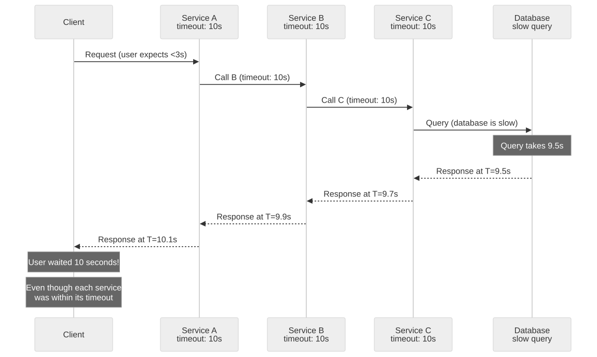
Deadline Propagation (Solution):
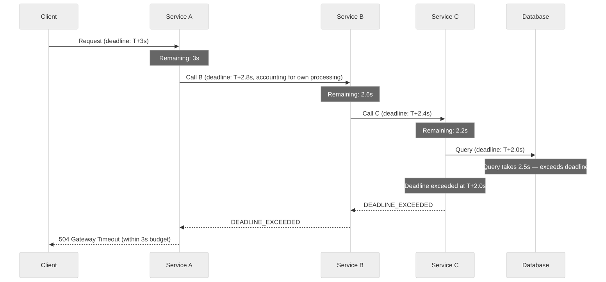
Timeout Budget Strategy:
// Total timeout budget: 3 seconds
Service A processing: 200ms budget
→ Call to Service B: 2500ms budget
Service B processing: 200ms budget
→ Call to Service C: 1800ms budget
Service C processing: 200ms budget
→ Database query: 1400ms budget
→ Call to Service D (parallel): 2500ms budget
Service D processing: 100ms budget
→ Cache lookup: 50ms budget (fast path)
// Rules:
// 1. Each service subtracts its own processing time from the remaining budget
// 2. Downstream calls get the remaining budget, not a new fixed timeout
// 3. gRPC supports deadline propagation natively via metadata
// 4. For HTTP/REST, propagate via custom header: X-Request-Deadline
When to Use Timeout: - Every remote call (no exceptions). This is not optional. - Database queries, HTTP calls, gRPC calls, message queue operations.
When NOT to Use Timeout: - There is no scenario where you should omit timeouts on remote calls. - Even "fast" local operations benefit from timeouts for defensive programming.
Common Mistakes: 1. No timeout at all — the number one cause of cascading failures. 2. Timeout too long (30s default) — user has already left by the time you respond. 3. Timeout too short (100ms) — triggers false failures during normal load spikes. 4. Same timeout at every level — doesn't account for call chain depth. 5. Not propagating deadlines — each service sets its own timeout, ignoring the overall budget. 6. Timeout without retry — if you time out, should you retry? Only if the operation is idempotent and the deadline hasn't been fully consumed.
Interview Insights: - Mention deadline propagation proactively: "Each service passes the remaining time budget to downstream calls, so the total response time never exceeds the original deadline." - gRPC has built-in deadline propagation; REST requires a custom header. - Connect timeouts to circuit breakers: "If a service consistently times out, the circuit breaker should trip to fail fast."
3.4 Bulkhead Pattern
Definition: The bulkhead pattern isolates failures by partitioning system resources (threads, connections, memory) into independent pools. Named after ship bulkheads that prevent flooding from spreading, this pattern ensures that a failure in one area doesn't consume all resources and bring down the entire system.
Architecture Diagram:


Bulkhead Types:
| Type | Mechanism | Isolation Level | Overhead |
|---|---|---|---|
| Thread pool isolation | Separate thread pool per dependency | High (OS thread per call) | High (context switching, memory) |
| Semaphore isolation | Counting semaphore limits concurrent calls | Medium (no extra threads) | Low (just a counter) |
| Service mesh bulkhead | Connection pool limits at proxy level | High (infrastructure-level) | Low (handled by sidecar) |
Thread Pool vs Semaphore:
// Thread Pool Isolation
// - Each dependency gets its own thread pool
// - Caller's thread is freed immediately (submits to dependency's pool)
// - Supports timeout on the pool (task.get(timeout))
// - Higher memory overhead (each thread ~1MB stack)
// - Use for: untrusted or slow dependencies
// Semaphore Isolation
// - Limits concurrent calls using a semaphore count
// - Caller's thread executes the call (no extra thread)
// - Lower overhead
// - Timeout is less precise (depends on the call itself timing out)
// - Use for: trusted dependencies where you just want to limit concurrency
// Configuration example (Resilience4j Bulkhead)
BulkheadConfig:
maxConcurrentCalls: 25 // Max 25 simultaneous calls
maxWaitDuration: 500ms // Wait max 500ms for a permit
ThreadPoolBulkheadConfig:
maxThreadPoolSize: 20 // Max 20 threads in pool
coreThreadPoolSize: 10 // Min 10 threads kept alive
queueCapacity: 50 // Queue up to 50 requests
keepAliveDuration: 100ms // Idle thread TTL
Real-World Example: Amazon isolates each downstream service dependency with its own connection pool and thread pool. When the recommendation service is slow, only the threads allocated to recommendation calls are affected. The product detail page still loads quickly using the catalog and pricing thread pools.
When to Use Bulkhead: - Calling multiple downstream services where one might be slow or unreliable. - When failure of one dependency should not affect calls to other dependencies. - High-availability systems where partial functionality is better than total outage.
When NOT to Use Bulkhead: - Single-dependency services (nothing to isolate from). - When the overhead of multiple thread pools is too high for the service's resource constraints. - Very low-traffic services where resource contention is unlikely.
Common Mistakes: 1. Pool sizes too small — legitimate traffic gets rejected during normal operation. 2. Pool sizes too large — defeats the purpose; all threads are consumed by the slow dependency. 3. No monitoring on pool utilization — you don't know when a pool is near exhaustion. 4. Not combining with circuit breaker — bulkhead limits damage, circuit breaker stops the bleeding.
3.5 Fallback Pattern
Definition: The fallback pattern provides an alternative response when the primary path fails. Instead of returning an error to the user, the system gracefully degrades by serving cached data, default values, or simplified responses.
Fallback Strategy Hierarchy:

Fallback Strategies:
// Strategy 1: Cache Fallback
// Return the last known good response from cache
function getProductRecommendations(userId) {
try {
return recommendationService.getPersonalized(userId);
} catch (error) {
// Serve cached recommendations (may be stale)
cached = cache.get("recommendations:" + userId);
if (cached) {
return { data: cached, stale: true };
}
// Fall through to next strategy
}
}
// Strategy 2: Default Response
// Return a sensible default when no cached data exists
function getProductRecommendations(userId) {
// ... cache fallback above ...
// Return trending products as default
return { data: getTrendingProducts(), default: true };
}
// Strategy 3: Feature Flag Degradation
// Disable non-critical features when dependencies are down
function getProductPage(productId) {
product = catalogService.get(productId); // Required
// Non-critical features with fallbacks
reviews = featureFlag.isEnabled("reviews")
? reviewService.get(productId)
: { reviews: [], message: "Reviews temporarily unavailable" };
recommendations = featureFlag.isEnabled("recommendations")
? recommendationService.get(productId)
: { items: [] }; // Empty section
return { product, reviews, recommendations };
}
// Strategy 4: Graceful Degradation Tiers
// Tier 1 (normal): Full page with personalized content, reviews, recommendations
// Tier 2 (degraded): Full page with cached content, no personalization
// Tier 3 (minimal): Product info only, no dynamic content
// Tier 4 (static): Static product page from CDN
// Tier 5 (error): User-friendly error page with retry option
Real-World Example: Netflix implements multiple fallback tiers. If the personalization service is down, the homepage shows cached personalized rows. If the cache is empty, it shows trending content. If even that fails, it shows a statically compiled list of popular titles. The user always sees content, even during severe outages.
When to Use Fallback: - User-facing services where showing something is better than showing an error. - When stale data is acceptable (product catalog, recommendations, content feeds). - When default responses are meaningful (trending, popular, or empty states). - Combined with circuit breakers (fallback is invoked when the circuit is open).
When NOT to Use Fallback: - Financial transactions — you cannot "fall back" to an approximate payment amount. - When stale data is dangerous (real-time inventory, account balance). - When the fallback masks a critical failure that should trigger an alert.
Common Mistakes: 1. Fallback that calls another unreliable service — the fallback itself fails. 2. No indication to the user that data is stale — users make decisions based on outdated information. 3. Fallback that is never tested — it fails in production when you need it most. 4. Over-aggressive fallback that hides real issues — the service is broken for days and nobody notices.
Interview Insights: - Always pair circuit breakers with fallbacks: "When the circuit opens, we serve cached recommendations instead of returning a 500 error." - Show you understand the user experience: "The user sees a slightly stale product page instead of an error screen. We add a banner saying 'showing cached results.'"
Resilience Patterns — Combined Architecture
In production, resilience patterns are layered together:

Combined Configuration Example:
// Production resilience stack for a service call
callWithResilience(paymentService::authorize):
timeout: 3s
retry:
maxAttempts: 3
backoff: exponential(base=200ms, max=2s)
jitter: full
retryOn: [IOException, TimeoutException, 503, 429]
doNotRetryOn: [400, 401, 403, 404, 409]
circuitBreaker:
failureRateThreshold: 50%
slidingWindowSize: 20
waitDurationInOpenState: 30s
fallback: returnCachedAuthorization() or rejectGracefully()
bulkhead:
maxConcurrentCalls: 25
maxWaitDuration: 500ms
// Execution order:
// 1. Bulkhead: Acquire permit (or reject if pool full)
// 2. Circuit Breaker: Check state (fast-fail if OPEN)
// 3. Timeout: Start deadline timer
// 4. Execute call
// 5. On failure → Retry (with backoff + jitter)
// 6. All retries exhausted → Fallback
Section 3 — Architecture Decision Record
ADR-003: Resilience Strategy
| Decision Point | Choice | Rationale |
|---|---|---|
| Downstream call protection | Circuit breaker (Resilience4j) | Prevents cascading failure, auto-recovery |
| Transient failure handling | Retry with exponential backoff + jitter | Handles temporary issues without thundering herd |
| Timeout management | Deadline propagation | Ensures total latency stays within user-facing SLA |
| Resource isolation | Semaphore bulkhead | Lightweight isolation for trusted internal services |
| Failure UX | Multi-tier fallback | Cache → default → degraded → error |
| Infrastructure-level resilience | Service mesh (Istio) circuit breaking | Handles cross-cutting resilience without code changes |
Resilience Patterns Comparison Table
| Pattern | Protects Against | Mechanism | Requires |
|---|---|---|---|
| Circuit Breaker | Cascading failures, overloading failing services | State machine (Closed/Open/Half-Open) | Failure threshold tuning, fallback implementation |
| Retry | Transient failures, network glitches | Repeated attempts with backoff | Idempotent operations, backoff strategy |
| Timeout | Slow dependencies, resource leaks | Deadline-based cancellation | Timeout budget allocation, deadline propagation |
| Bulkhead | One dependency consuming all resources | Resource pool isolation | Pool sizing, monitoring |
| Fallback | Any failure in primary path | Alternative response strategy | Cached data, defaults, feature flags |
Section 4: API Patterns
API patterns define how clients interact with the microservices architecture. While individual services communicate via gRPC, Kafka, or REST, the external-facing API layer must handle cross-cutting concerns: authentication, rate limiting, request routing, response aggregation, and client-specific data shaping. This section covers the three core API patterns.
4.1 API Gateway
Definition: An API Gateway is a single entry point for all client requests. It routes requests to the appropriate backend service, handles cross-cutting concerns (authentication, rate limiting, logging), and optionally aggregates responses from multiple services.
Architecture Diagram:

Gateway Responsibilities:
| Concern | Implementation | Example |
|---|---|---|
| Routing | Path-based, header-based, weight-based | /api/v1/orders → Order Service |
| Authentication | JWT validation, OAuth2, API key | Validate token before forwarding |
| Rate Limiting | Per-user, per-IP, per-API key | 100 req/min for free tier |
| Request Aggregation | Combine multiple backend calls | Product page = catalog + pricing + reviews |
| Response Caching | Cache GET responses by URL/headers | Cache product listings for 60s |
| Protocol Translation | REST to gRPC, HTTP to WebSocket | Client speaks REST, backend speaks gRPC |
| Load Balancing | Round-robin, least-connections, weighted | Distribute across service instances |
| Circuit Breaking | Gateway-level circuit breaker | Return 503 when backend is down |
| Request/Response Transform | Header injection, body transformation | Add X-Request-ID, rename fields |
Rate Limiting Implementation:
// Token Bucket Algorithm (most common)
Bucket:
capacity: 100 // Max tokens
refillRate: 10/sec // 10 tokens added per second
currentTokens: 100 // Starts full
handleRequest(request):
key = request.apiKey // or IP, userId, etc.
bucket = getBucket(key)
if bucket.currentTokens >= 1:
bucket.currentTokens -= 1
forward(request)
return 200 OK
else:
return 429 Too Many Requests
Headers:
Retry-After: 1 // Seconds until bucket refills
X-RateLimit-Limit: 100 // Total limit
X-RateLimit-Remaining: 0
X-RateLimit-Reset: 1679529600 // Unix timestamp
// Sliding Window Rate Limiting
// More precise than token bucket for bursty traffic
// Tracks request count in sliding time windows
// Implementation: Redis sorted set with timestamp scores
Request Aggregation:
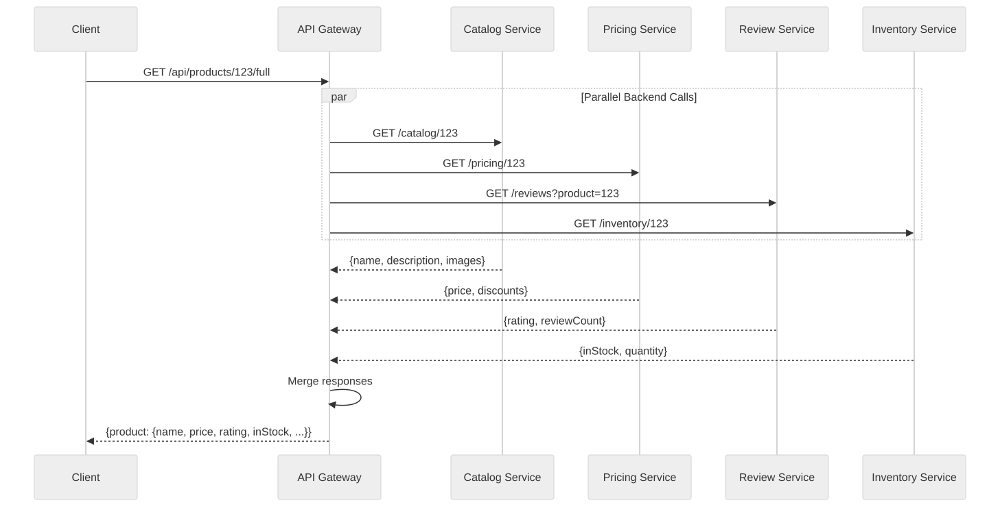
Real-World Example: Netflix uses Zuul as its API gateway, handling over 50 billion API requests per day. Zuul performs authentication, routing, load shedding, and request transformation. Amazon API Gateway is a fully managed service that handles authentication, throttling, and caching for serverless architectures.
When to Use API Gateway: - Any microservices architecture with external clients. - When cross-cutting concerns need to be centralized (auth, rate limiting). - When clients need aggregated responses from multiple services. - To decouple client API from internal service structure.
When NOT to Use API Gateway: - Simple monolithic applications with a single backend. - When the gateway becomes a bottleneck or single point of failure (mitigate with multiple gateway instances). - If the gateway team becomes a deployment bottleneck for all backend teams.
Trade-offs:
| Advantage | Disadvantage |
|---|---|
| Centralized cross-cutting concerns | Single point of failure (must be HA) |
| Client-facing API decoupled from internals | Added latency (extra network hop) |
| Protocol translation | Can become a development bottleneck |
| Response aggregation reduces client round-trips | Complex configuration management |
| Simplified client code | Risk of becoming a "God gateway" with too much logic |
Common Mistakes: 1. Putting business logic in the gateway — it should only handle cross-cutting infrastructure concerns. 2. Single gateway for all clients — leads to different client needs competing for gateway changes. 3. Not scaling the gateway independently — it handles all traffic and must auto-scale. 4. Overly aggressive caching — stale data on POST/PUT/DELETE operations. 5. Not implementing circuit breaking at the gateway — a slow backend takes down all routes.
4.2 Backend-for-Frontend (BFF)
Definition: The BFF pattern creates a dedicated backend for each client type (web, mobile, TV, partner API). Each BFF aggregates, transforms, and optimizes the response for its specific client's needs, avoiding the "one-size-fits-all" gateway problem.
Architecture Diagram:

Mobile vs Web BFF Example:
// Web BFF: GET /web/products/123
// Returns rich data for desktop experience
{
"product": {
"id": "123",
"name": "Wireless Headphones",
"description": "Full description with HTML formatting...",
"images": {
"hero": "https://cdn/img/123-hero-1200x800.jpg",
"gallery": ["https://cdn/img/123-1.jpg", "..."],
"zoom": "https://cdn/img/123-zoom-3000x2000.jpg"
},
"specifications": { /* detailed specs table */ },
"reviews": { /* paginated reviews with full text */ },
"relatedProducts": [ /* 12 related products */ ],
"sellerInfo": { /* full seller profile */ }
}
}
// Mobile BFF: GET /mobile/products/123
// Returns compact data for mobile experience
{
"product": {
"id": "123",
"name": "Wireless Headphones",
"shortDescription": "Premium wireless headphones...",
"image": "https://cdn/img/123-mobile-400x400.jpg",
"price": "$79.99",
"rating": 4.5,
"reviewCount": 1247,
"inStock": true
}
}
// Smaller payload, optimized images, fewer fields
// Mobile BFF does NOT fetch reviews, specifications, or related products
// These are loaded on-demand via separate mobile API calls
GraphQL as BFF:
// Instead of separate BFF services, use GraphQL as a universal BFF
// Clients query exactly what they need
// Web client query (rich):
query {
product(id: "123") {
name
description
images { hero, gallery, zoom }
specifications { key, value }
reviews(first: 10) { edges { node { rating, text, author } } }
relatedProducts(first: 12) { name, price, image }
seller { name, rating, memberSince }
}
}
// Mobile client query (compact):
query {
product(id: "123") {
name
shortDescription
thumbnailImage
price
rating
reviewCount
inStock
}
}
// Same GraphQL schema, different queries per client
// No need for separate BFF services
When to Use BFF: - Multiple client types with significantly different data needs (web, mobile, TV). - When a single API gateway becomes a bottleneck due to conflicting client requirements. - Teams are organized by client type (web team, mobile team) and need autonomy. - When response payload optimization per client is important (bandwidth constraints on mobile).
When NOT to Use BFF: - Single client type (just use an API gateway). - When client needs are similar enough that a single API serves all. - Small team that cannot maintain multiple BFF services. - When GraphQL can serve as a universal BFF (clients shape their own queries).
Trade-offs:
| Advantage | Disadvantage |
|---|---|
| Client-optimized responses | Code duplication across BFFs |
| Independent deployment per client | More services to maintain |
| Team autonomy (web team owns web BFF) | Shared logic must be factored into libraries |
| Reduced payload size for bandwidth-constrained clients | BFFs can diverge, causing feature inconsistency |
Common Mistakes: 1. Too much shared logic across BFFs — extract it into shared libraries or downstream services. 2. BFF doing business logic — it should only aggregate and transform, not enforce business rules. 3. One BFF per team instead of per client type — leads to organizational BFFs, not technical ones. 4. Not considering GraphQL first — it often eliminates the need for separate BFF services.
Interview Insights: - BFF is the answer when the interviewer says "We have web, mobile, and TV clients with different needs." - Compare BFF with GraphQL: "GraphQL can serve as a universal BFF where clients shape their own queries. We'd use separate BFFs only if client-specific orchestration logic is needed."
4.3 Aggregator Pattern
Definition: The aggregator pattern composes responses from multiple downstream services into a single response for the client. It is a general pattern that encompasses specific strategies: scatter-gather, chained calls, and service composition.
Aggregation Strategies:


Scatter-Gather Implementation:
// Scatter-Gather: Product Detail Page Assembly
async function getProductDetailPage(productId) {
// Scatter: Launch all calls in parallel
const [catalog, pricing, inventory, reviews, recommendations] =
await Promise.allSettled([
catalogService.get(productId), // 50ms typical
pricingService.get(productId), // 30ms typical
inventoryService.check(productId), // 20ms typical
reviewService.getSummary(productId), // 80ms typical
recommendationService.get(productId), // 100ms typical
]);
// Gather: Merge results, handle partial failures
return {
product: catalog.status === 'fulfilled' ? catalog.value : null,
price: pricing.status === 'fulfilled' ? pricing.value : null,
availability: inventory.status === 'fulfilled' ? inventory.value : null,
reviews: reviews.status === 'fulfilled'
? reviews.value
: { rating: null, count: null }, // Fallback for non-critical data
recommendations: recommendations.status === 'fulfilled'
? recommendations.value
: [], // Empty fallback
};
// Total latency = max(50, 30, 20, 80, 100) = ~100ms
// NOT sum(50+30+20+80+100) = 280ms (sequential would be this)
}
Chained Calls Implementation:
// Chained: Order creation pipeline
// Each step depends on the previous step's result
async function createOrder(request) {
// Step 1: Validate user
const user = await userService.validate(request.userId);
// User data needed for: address validation, credit check
// Step 2: Check inventory (needs product IDs from request)
const availability = await inventoryService.reserve(request.items);
// Reservation ID needed for: order creation
// Step 3: Calculate pricing (needs items + user tier for discounts)
const pricing = await pricingService.calculate({
items: request.items,
userTier: user.tier,
promoCode: request.promoCode,
});
// Step 4: Authorize payment (needs pricing total)
const payment = await paymentService.authorize({
userId: user.id,
amount: pricing.total,
paymentMethod: request.paymentMethod,
});
// Step 5: Create order (needs everything above)
const order = await orderService.create({
userId: user.id,
items: availability.reservedItems,
pricing: pricing,
paymentAuth: payment.authorizationId,
});
return order;
// Total latency = sum of all sequential calls
// Optimization: Parallelize steps 2 and 3 (independent)
}
When to Use Aggregator: - Client needs data from multiple services in a single response. - Building composite APIs (product detail page, user dashboard). - When reducing client-side round-trips is important (especially for mobile).
When NOT to Use Aggregator: - When the client can make parallel calls itself (modern web browsers handle parallel requests well). - When aggregation logic is complex enough to warrant a full BFF. - When aggregation introduces a single point of failure.
Trade-offs:
| Advantage | Disadvantage |
|---|---|
| Reduced client round-trips | Added complexity in aggregator |
| Consistent data assembly | Single point of failure |
| Parallel execution reduces latency | Partial failure handling is complex |
| Centralized data transformation | Aggregator can become a bottleneck |
Common Mistakes: 1. Sequential calls when parallel is possible — scatter-gather should be the default. 2. No partial failure handling — if one of five services fails, should the whole response fail? 3. Aggregator doing business logic — keep it as a thin composition layer. 4. No timeout budget — if one slow service exhausts the timeout, faster services' results are wasted.
Section 4 — Architecture Decision Record
ADR-004: API Layer Strategy
| Decision Point | Choice | Rationale |
|---|---|---|
| External client entry point | API Gateway (Kong/Envoy) | Centralized auth, rate limiting, routing |
| Client-specific optimization | BFF for mobile + GraphQL for web | Mobile needs compact payloads; web benefits from flexible queries |
| Service composition | Scatter-gather in BFF layer | Parallel execution minimizes latency |
| Partner API | Dedicated partner gateway | Different rate limits, auth, and SLAs |
| Internal API between services | gRPC with service mesh | Type safety, performance, infrastructure-level resilience |
API Patterns Comparison Table
| Dimension | API Gateway | BFF | Aggregator |
|---|---|---|---|
| Purpose | Single entry point, cross-cutting concerns | Client-specific backend | Compose multi-service responses |
| Scope | All clients | One client type | One composite API |
| Business Logic | None (routing/auth only) | Client-specific orchestration | Thin composition |
| Owned By | Platform/infra team | Client team (web, mobile) | Service team |
| Complexity | Configuration-heavy | Code-heavy (per client) | Moderate |
| When to Use | Always (baseline) | Multiple client types with different needs | Composite pages/responses |
Anti-Patterns and Pitfalls
Understanding what NOT to do is as important as knowing the correct patterns. This section catalogues the most common microservices anti-patterns encountered in production systems and interviews.
The Distributed Monolith
Symptom: Services are deployed independently but are so tightly coupled that you cannot change one without deploying several others simultaneously.
Causes: - Shared database (multiple services read/write the same tables) - Synchronous call chains (A → B → C → D, all blocking) - Shared domain models (services import the same library with entity classes) - Lock-step deployments (all services must be at the same version)
Detection:
// If your deployment pipeline looks like this, you have a distributed monolith:
deploy:
- deploy service-A (v2.3)
- deploy service-B (v1.7) # Must match A's v2.3 interface
- deploy service-C (v3.1) # Must match B's v1.7 interface
- run integration-tests
- if any fail, rollback ALL three
// A true microservice deployment:
deploy service-A v2.3:
- service-A is backward compatible with service-B v1.6 AND v1.7
- deploy independently
- service-A's tests pass in isolation
Fix: - Enforce database-per-service strictly - Replace synchronous chains with async events where possible - Use API versioning and backward compatibility - Each service must be deployable, testable, and rollbackable independently
Nano-Services (Over-Decomposition)
Symptom: Services are so small that the operational overhead (deployment, monitoring, networking) exceeds the value of decomposition.
Detection: - Services with fewer than 3 API endpoints - Services that always change together - 200 services for a team of 10 engineers - Most service calls are synchronous chains of 5+ hops
Fix: - Merge services that always change together back into a single service - Apply the "two-pizza team" rule: a service should be owned by a team of 5-8 engineers - Each service should own a meaningful bounded context, not a single entity
Chatty Services
Symptom: Completing a single user request requires dozens of inter-service calls, each adding network latency.
// Anti-pattern: Chatty order creation
createOrder():
user = userService.getUser(userId) // 20ms
address = userService.getAddress(userId) // 20ms
creditScore = userService.getCreditScore(userId) // 20ms
product1 = productService.get(sku1) // 15ms
product2 = productService.get(sku2) // 15ms
product3 = productService.get(sku3) // 15ms
price1 = pricingService.getPrice(sku1) // 10ms
price2 = pricingService.getPrice(sku2) // 10ms
price3 = pricingService.getPrice(sku3) // 10ms
tax = taxService.calculate(items, address) // 25ms
// Total: 10 sequential calls = 160ms minimum
// With retries and timeouts: 300ms+
// Fix: Batch APIs and parallel execution
createOrder():
[user, products, prices] = await Promise.all([
userService.getUserFull(userId), // 25ms (includes address, credit)
productService.getBatch([sku1, sku2, sku3]), // 20ms (batch)
pricingService.getPriceBatch([sku1, sku2, sku3]), // 15ms (batch)
]);
tax = taxService.calculate(items, user.address); // 25ms
// Total: 25ms (parallel) + 25ms (sequential) = 50ms
God Service
Symptom: One service has become the central hub that every other service depends on. It is involved in every transaction and is the single point of failure for the entire system.
Fix: - Identify which bounded contexts are bundled together - Extract bounded contexts into separate services - Use events instead of direct calls to reduce coupling
Service Mesh Integration
A service mesh moves cross-cutting concerns (retries, timeouts, circuit breaking, mTLS, observability) out of application code and into infrastructure. This section covers how the patterns in this chapter interact with a service mesh.
Service Mesh Architecture

Patterns Handled by Service Mesh vs Application Code
| Pattern | Service Mesh | Application Code | Recommendation |
|---|---|---|---|
| Retry | Basic retries on 5xx/connection errors | Complex retry logic (idempotency keys, retry budgets) | Mesh for simple, app for complex |
| Circuit Breaker | Connection-level circuit breaking | Business-logic-aware circuit breaking | Mesh for infrastructure, app for business |
| Timeout | Connection and request timeouts | Deadline propagation across call chains | Both — mesh for outer, app for inner |
| Bulkhead | Connection pool limits per service | Thread pool isolation, semaphore limits | Both — different isolation levels |
| mTLS | Automatic certificate rotation and enforcement | N/A | Mesh exclusively |
| Load Balancing | Client-side LB with health checking | N/A | Mesh exclusively |
| Tracing | Automatic span creation and propagation | Business context injection (order ID, user ID) | Both |
| Rate Limiting | Per-service rate limits | Per-API, per-tenant limits | Mesh for service-level, app for business-level |
Key Insight: The service mesh handles infrastructure-level resilience; application code handles business-level resilience. You need both.
Observability for Distributed Patterns
Distributed systems require distributed observability. Each pattern in this chapter generates signals that must be monitored.
Monitoring Dashboard Template
// Essential metrics for each pattern
// Circuit Breaker Dashboard
circuit_breaker_state{service="payment", dependency="stripe"} = CLOSED|OPEN|HALF_OPEN
circuit_breaker_failure_rate{service="payment", dependency="stripe"} = 0.12
circuit_breaker_calls_total{service="payment", state="rejected"} = 145
// Retry Dashboard
retry_attempts_total{service="order", target="inventory"} = 3421
retry_success_on_attempt{service="order", attempt="1"} = 2800
retry_success_on_attempt{service="order", attempt="2"} = 500
retry_success_on_attempt{service="order", attempt="3"} = 100
retry_exhausted_total{service="order"} = 21
// Kafka Consumer Dashboard
kafka_consumer_lag{group="fulfillment", topic="orders"} = 1523
kafka_consumer_messages_per_sec{group="fulfillment"} = 450
kafka_consumer_rebalance_count{group="fulfillment"} = 2
// Saga Dashboard
saga_in_progress{type="checkout"} = 45
saga_completed{type="checkout"} = 12300
saga_compensated{type="checkout"} = 89
saga_stuck{type="checkout", age_minutes=">5"} = 0 // Alert if > 0
// CQRS Dashboard
cqrs_read_model_lag_seconds{model="order_list"} = 0.8
cqrs_projection_errors{model="order_list"} = 0
cqrs_read_model_rebuild_progress{model="order_list"} = 100%
Alert Rules
// Critical alerts
// Circuit breaker opened — a dependency is failing
ALERT CircuitBreakerOpen
WHEN circuit_breaker_state == "OPEN"
FOR 1m
SEVERITY critical
MESSAGE "Circuit breaker for {dependency} is OPEN in {service}"
// Kafka consumer falling behind
ALERT ConsumerLagHigh
WHEN kafka_consumer_lag > 10000
FOR 5m
SEVERITY warning
MESSAGE "Consumer group {group} lag is {lag} on topic {topic}"
// Saga stuck in intermediate state
ALERT SagaStuck
WHEN saga_in_progress AND saga_last_transition_age > 5m
SEVERITY critical
MESSAGE "Saga {saga_id} stuck in state {state} for {age}"
// CQRS read model stale
ALERT ReadModelStale
WHEN cqrs_read_model_lag_seconds > 30
FOR 2m
SEVERITY warning
MESSAGE "Read model {model} is {lag}s behind write model"
Cross-Cutting Concerns
Distributed Tracing
Every request in a microservices architecture touches multiple services. Distributed tracing assigns a unique trace ID to each request and propagates it across service boundaries, creating a call tree that shows latency, errors, and dependencies.
// Trace propagation via headers
// OpenTelemetry standard headers:
traceparent: 00-0af7651916cd43dd8448eb211c80319c-b7ad6b7169203331-01
// version-traceId-spanId-flags
// Each service:
// 1. Reads traceparent from incoming request
// 2. Creates a new span (child of incoming span)
// 3. Propagates traceparent to downstream calls
// 4. Reports span to tracing backend (Jaeger, Zipkin, Datadog)
Service Discovery
Services need to find each other dynamically as instances scale up and down.
// Client-side discovery (Netflix Eureka model):
// 1. Service registers itself with discovery server on startup
// 2. Client queries discovery server for service addresses
// 3. Client load-balances across returned addresses
// Server-side discovery (Kubernetes model):
// 1. Service registers via platform (K8s Service object)
// 2. DNS or load balancer resolves service name to available instances
// 3. Client calls service name, platform handles routing
// DNS-based (most common in Kubernetes):
// order-service.production.svc.cluster.local → 10.0.0.15, 10.0.0.16, 10.0.0.17
Comprehensive Pattern Interaction Map

Practice Questions
Beginner Level
Q1. What is the fundamental difference between synchronous and asynchronous communication in microservices? When would you choose one over the other?
Q2. Explain the circuit breaker pattern. Draw the three-state diagram and describe the transition conditions.
Q3. Why is "database per service" considered the default data pattern in microservices? What problem does it solve that a shared database doesn't?
Q4. What is the N+1 query problem in GraphQL, and how does DataLoader solve it?
Q5. A service call fails intermittently. Should you add a retry? What conditions must be true before retries are safe?
Intermediate Level
Q6. Design a saga for an e-commerce checkout that involves Order Service, Payment Service, Inventory Service, and Shipping Service. Show both the happy path and the compensation path when inventory reservation fails. Would you use choreography or orchestration? Justify your choice.
Q7. You are building a product detail page that requires data from five microservices (catalog, pricing, inventory, reviews, recommendations). The page must load in under 200ms. Design the aggregation strategy, including fallback behavior when individual services are slow or down.
Q8. Compare Kafka and RabbitMQ for the following use case: An order event must be consumed by the notification service, analytics service, and fulfillment service. Which would you choose and why?
Q9. Explain CQRS and when it provides value over a traditional single-model architecture. Design the read models for an e-commerce order system that needs to support: (a) order list by customer, (b) real-time revenue dashboard, and (c) full-text order search.
Q10. Your microservices architecture has a cascading timeout problem: Service A → B → C → D, each with a 5-second timeout. Total worst-case latency is 20 seconds. How do you fix this?
Advanced Level
Q11. Design an event sourcing system for a banking application. Address: event schema evolution (what happens when the "TransferCreated" event adds a new "currency" field?), snapshot strategy, and projection rebuild time for an aggregate with 100,000 events.
Q12. You are migrating from a monolith to microservices. The monolith has a single PostgreSQL database with 200 tables. Teams have been identified, but the tables have many cross-cutting foreign keys. Design a migration strategy that maintains data consistency during the transition. Include the role of the shared database anti-pattern as a transitional step.
Q13. Design the resilience stack for a payment authorization service. The service calls three downstream providers (Stripe, Adyen, PayPal) and must authorize exactly once, never double-charge, and fail gracefully. Show how circuit breaker, retry, timeout, bulkhead, and fallback patterns interact.
Q14. An interviewer asks: "Design a notification system that sends push notifications, emails, and SMS when an order ships. The system must handle 100,000 order shipments per hour and guarantee at-least-once delivery." Walk through the communication pattern choice (Kafka vs RabbitMQ vs SQS), consumer design, idempotency strategy, and dead letter queue handling.
Q15. Compare API Gateway + BFF + GraphQL approaches for a company that has a web app, iOS app, Android app, and partner API. The web and mobile apps have very different data needs. The partner API has strict rate limits and different authentication. Design the API layer and justify each decision.
Q16. You are designing a real-time inventory system. When a customer adds an item to their cart, inventory must be temporarily reserved. The reservation expires after 15 minutes. Multiple microservices need to be aware of the reservation. Design the data flow using event sourcing, explain the event schema, and describe how you would handle the TTL-based reservation expiry.
Interview Cheat Sheet
Pattern Selection Quick Reference
| Scenario | Pattern | Key Phrase to Use |
|---|---|---|
| "How do services communicate?" | REST (external), gRPC (internal), Kafka (async) | "REST for public APIs, gRPC for internal, Kafka for event-driven" |
| "How to handle distributed transactions?" | Saga (orchestration for complex flows) | "Orchestration-based saga with compensating transactions" |
| "What if a service goes down?" | Circuit breaker + fallback | "Circuit breaker trips after 50% failure rate; we serve cached data" |
| "How to handle high read-to-write ratio?" | CQRS with optimized read models | "Separate read models per query pattern, updated via events" |
| "Multiple clients with different needs?" | BFF or GraphQL | "BFF per client type, or GraphQL as a universal BFF" |
| "How to ensure message ordering?" | Kafka with partition keys | "Same entity ID as partition key guarantees ordering within partition" |
| "How to retry safely?" | Exponential backoff + jitter + idempotency | "Exponential backoff with jitter; all operations must be idempotent" |
| "How to prevent cascading timeouts?" | Deadline propagation | "Each service passes remaining time budget to downstream calls" |
| "Need complete audit trail?" | Event sourcing | "Every state change stored as immutable event; current state derived from replay" |
| "How to aggregate data from multiple services?" | Scatter-gather aggregator | "Parallel calls to all services; merge results with partial failure fallback" |
Five-Minute System Design Resilience Template
When asked to design any distributed system, apply this template:
1. Communication:
- External clients → API Gateway → REST/GraphQL
- Internal services → gRPC (sync) + Kafka (async)
2. Data:
- Database per service
- Cross-service queries via CQRS read models
- Multi-service transactions via sagas
3. Resilience (apply to EVERY service-to-service call):
- Timeout: deadline propagation from client SLA
- Retry: exponential backoff + jitter (only for idempotent ops)
- Circuit breaker: trip at 50% failure rate over 20 calls
- Bulkhead: isolate thread pools per dependency
- Fallback: cache → default → degraded → error
4. API Layer:
- API Gateway for auth + rate limiting + routing
- BFF or GraphQL for client-specific optimization
- Scatter-gather for composite responses
5. Observability:
- Distributed tracing (trace ID across all hops)
- Circuit breaker state monitoring
- Consumer lag monitoring (Kafka)
- Read model staleness monitoring (CQRS)
Detailed Worked Example: E-Commerce Order Flow
This section ties all four pattern categories together by walking through a complete order creation flow.
System Context
A customer places an order on an e-commerce platform. The system must: 1. Validate the user and shipping address 2. Reserve inventory for all items 3. Calculate pricing (including promotions and tax) 4. Authorize payment 5. Create the order 6. Send confirmation notification 7. Trigger fulfillment
Pattern Application
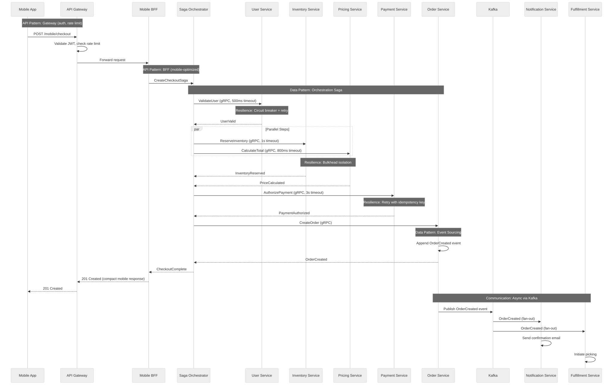
Failure Scenario: Payment Authorization Fails
Saga State Machine:
1. UserValidated ✓
2. InventoryReserved ✓
3. PriceCalculated ✓
4. PaymentAuthorized ✗ (declined)
Compensation:
3. (No compensation needed — price calculation is stateless)
2. ReleaseInventory → Inventory Service releases reserved stock
1. (No compensation needed — user validation is read-only)
Result: Order not created. Client receives 402 Payment Required.
Inventory is released. No orphaned reservations.
Failure Scenario: Inventory Service Down
// Circuit breaker on Inventory Service is OPEN
// Saga cannot proceed without inventory reservation
Options:
A. Fail fast → Return "Service temporarily unavailable, try again"
B. Fallback → Check cached inventory, create order with "pending verification"
(risky: may oversell)
C. Queue → Queue the checkout request, process when service recovers
(user waits for async confirmation)
// Most e-commerce systems choose Option A for checkout (correctness > availability)
// But Option B for product display (showing "in stock" based on cache is acceptable)
Latency Budget Breakdown
Total budget: 3 seconds (mobile user expectation)
Gateway processing: 50ms
BFF processing: 30ms
User validation: 100ms (with circuit breaker fast-fail)
Inventory + Pricing: 200ms (parallel, max of the two)
Payment authorization: 800ms (external provider, highest variance)
Order creation: 100ms
Response serialization: 20ms
------
Total: ~1300ms typical
Budget remaining: 1700ms (buffer for retries and variance)
Technology Selection Guide
Choosing a Message Broker

Choosing a Synchronous Protocol

Choosing a Data Pattern

Summary
This chapter covered the four pillars of microservices architecture:
Communication Patterns define how services interact. REST serves external APIs with universal tooling. gRPC accelerates internal communication with binary serialization and streaming. GraphQL empowers clients to query exactly what they need. Kafka provides high-throughput event streaming with replay capability. RabbitMQ handles complex message routing. SQS offers zero-ops queuing. Pub/Sub enables fan-out decoupling. Event sourcing turns state changes into an immutable communication stream.
Data Patterns govern how services own and share data. Database-per-service enforces independence at the cost of cross-service query complexity. The shared database anti-pattern should be a transitional step, not a permanent architecture. Sagas replace distributed ACID transactions with choreography or orchestration and compensating transactions. Event sourcing stores complete history for audit and replay. CQRS separates read and write models for independent optimization.
Resilience Patterns ensure the system survives failure. Circuit breakers prevent cascading failures. Retries with exponential backoff and jitter handle transient issues. Deadline propagation keeps total latency within SLA bounds. Bulkheads isolate resource consumption per dependency. Fallback strategies keep the user experience functional during partial outages.
API Patterns shape the client-facing surface. API gateways centralize cross-cutting concerns. BFFs optimize responses per client type. Aggregators compose multi-service responses with parallel execution and partial failure handling.
These patterns are not academic — they are the vocabulary of production microservices architecture. Every system design interview at the senior level expects fluency in applying them to concrete problems.
References and Further Reading
- "Building Microservices" by Sam Newman — comprehensive guide to microservice architecture patterns.
- "Designing Data-Intensive Applications" by Martin Kleppmann — deep coverage of distributed data patterns.
- "Release It!" by Michael Nygard — production resilience patterns including circuit breakers and bulkheads.
- "Enterprise Integration Patterns" by Gregor Hohpe — messaging pattern catalog.
- Netflix Tech Blog — real-world circuit breaker and resilience implementations.
- Kafka documentation — partitioning, consumer groups, and delivery guarantees.
- gRPC documentation — streaming patterns, interceptors, and deadline propagation.
- Microsoft Azure Architecture Center — cloud design patterns reference.